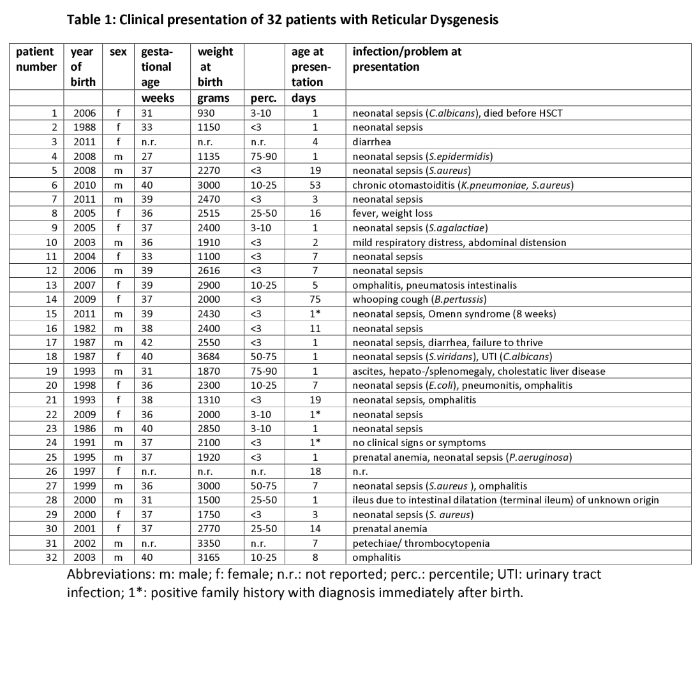

Reticular dysgenesis (RD) is the most severe form of severe combined immunodeficiency, caused by biallelic loss-of-function variants in AK2, the gene encoding adenylate kinase 2. AK2 is the only adenylate kinase resident in the mitochondrial intermembrane space, where it interconverts adenine nucleotides (ATP + AMP <-> 2 ADP) and sustains the adenylate pool that feeds oxidative phosphorylation; no other family member occupies that compartment, so its loss is not buffered. The resulting bioenergetic and redox failure kills differentiating haematopoietic progenitors, and the block therefore falls at the progenitor stage and strikes the granulocytic and lymphoid lineages together, producing agranulocytosis with a marrow maturation arrest at the promyelocyte stage alongside profound T- and NK-cell lymphopenia. This is what separates RD from the commoner forms of SCID already curated here, where the lesion is in V(D)J recombination (RAG1/RAG2, DCLRE1C) or cytokine-receptor signalling (IL2RG, JAK3, IL7R) and myelopoiesis is spared. Erythroid and megakaryocytic maturation are generally preserved, which constrains the mechanism to a lineage-restricted rather than a global stem-cell defect. AK2 is separately required in the stria vascularis of the cochlea, which accounts for the bilateral sensorineural deafness that is unique to RD among the SCIDs and is the feature that flags the diagnosis clinically. Affected neonates present within the first weeks of life with overwhelming bacterial sepsis; the neutropenia is characteristically refractory to G-CSF, and allogeneic haematopoietic stem cell transplantation with myeloablative conditioning is the only cure - but it does not restore hearing, because the cochlear tissue is not replaced by donor cells.
Ask a research question about Reticular Dysgenesis. OpenScientist will conduct autonomous deep research using the Disorder Mechanisms Knowledge Base and PubMed literature (typically 10-30 minutes).
Do not include personal health information in your question. Questions and results are cached in your browser's local storage.
name: Reticular Dysgenesis
category: Mendelian
creation_date: "2026-09-05T00:00:00Z"
synonyms:
- generalized hematopoietic hypoplasia
- congenital aleukocytosis
- De Vaal disease
- aleukocytosis
- SCID with leukopenia
- immunoerythromyeloid hypoplasia
description: >-
Reticular dysgenesis (RD) is the most severe form of severe combined
immunodeficiency, caused by biallelic loss-of-function variants in AK2, the gene
encoding adenylate kinase 2. AK2 is the only adenylate kinase resident in the
mitochondrial intermembrane space, where it interconverts adenine nucleotides
(ATP + AMP <-> 2 ADP) and sustains the adenylate pool that feeds oxidative
phosphorylation; no other family member occupies that compartment, so its loss is
not buffered. The resulting bioenergetic and redox failure kills differentiating
haematopoietic progenitors, and the block therefore falls at the progenitor stage
and strikes the granulocytic and lymphoid lineages together, producing agranulocytosis
with a marrow maturation arrest at the promyelocyte stage alongside profound T- and
NK-cell lymphopenia. This is what separates RD from the commoner forms of SCID
already curated here, where the lesion is in V(D)J recombination (RAG1/RAG2,
DCLRE1C) or cytokine-receptor signalling (IL2RG, JAK3, IL7R) and myelopoiesis is
spared. Erythroid and megakaryocytic maturation are generally preserved, which
constrains the mechanism to a lineage-restricted rather than a global stem-cell
defect. AK2 is separately required in the stria vascularis of the cochlea, which
accounts for the bilateral sensorineural deafness that is unique to RD among the
SCIDs and is the feature that flags the diagnosis clinically. Affected neonates
present within the first weeks of life with overwhelming bacterial sepsis; the
neutropenia is characteristically refractory to G-CSF, and allogeneic
haematopoietic stem cell transplantation with myeloablative conditioning is the
only cure - but it does not restore hearing, because the cochlear tissue is not
replaced by donor cells.
disease_term:
preferred_term: reticular dysgenesis
term:
id: MONDO:0009973
label: reticular dysgenesis
parents:
- T-B- severe combined immunodeficiency
- severe combined immunodeficiency
- combined immunodeficiency
classifications:
harrisons_chapter:
- classification_value: GENETICS_ENVIRONMENT_DISEASE
evidence:
- reference: PMID:19043417
reference_title: "Reticular dysgenesis (aleukocytosis) is caused by mutations in the gene encoding mitochondrial adenylate kinase 2."
supports: SUPPORT
evidence_source: HUMAN_CLINICAL
snippet: "These observations suggest that reticular dysgenesis is the first example of a human immunodeficiency syndrome that is causally linked to energy metabolism and that can therefore be classified as a mitochondriopathy."
explanation: >-
RD is a mechanism-defined Mendelian mitochondriopathy spanning haematopoietic
and cochlear tissue, which is the scope of Harrison's genes-and-disease Part
rather than a single organ-system Part.
iuis_category:
classification_value: combined immunodeficiency
evidence:
- reference: PMID:19043417
reference_title: "Reticular dysgenesis (aleukocytosis) is caused by mutations in the gene encoding mitochondrial adenylate kinase 2."
supports: SUPPORT
evidence_source: HUMAN_CLINICAL
snippet: "Reticular dysgenesis is the most severe form of inborn SCID."
explanation: >-
RD is a form of SCID, which is IUIS Table 1 (immunodeficiencies affecting
cellular and humoral immunity).
inheritance:
- name: Autosomal recessive inheritance
description: >-
RD is inherited in an autosomal recessive pattern; affected individuals carry
biallelic AK2 variants and unaffected parents are heterozygous carriers.
Consanguinity is frequent in reported series.
inheritance_term:
preferred_term: Autosomal recessive inheritance
term:
id: HP:0000007
label: Autosomal recessive inheritance
evidence:
- reference: PMID:19043416
reference_title: "Human adenylate kinase 2 deficiency causes a profound hematopoietic defect associated with sensorineural deafness."
supports: SUPPORT
evidence_source: HUMAN_CLINICAL
snippet: "Reticular dysgenesis is an autosomal recessive form of human severe combined immunodeficiency characterized by an early differentiation arrest in the myeloid lineage and impaired lymphoid maturation."
explanation: States the autosomal recessive inheritance of RD directly.
- reference: PMID:19043416
reference_title: "Human adenylate kinase 2 deficiency causes a profound hematopoietic defect associated with sensorineural deafness."
supports: SUPPORT
evidence_source: HUMAN_CLINICAL
snippet: "In all cases, the parents were found to be heterozygous for the mutated AK2 allele and the healthy siblings that we tested were heterozygous or homozygous for the wild-type allele"
explanation: >-
Carrier parents and unaffected heterozygous siblings establish the recessive
segregation pattern in the original AK2 kindreds.
genetic:
- name: AK2
gene_term:
preferred_term: AK2
term:
id: hgnc:362
label: AK2
relationship_type: CAUSATIVE
variant_origin: GERMLINE
association: >-
Biallelic loss-of-function variants in AK2 (adenylate kinase 2) are the sole
known cause of reticular dysgenesis. Reported alleles include missense changes in
conserved catalytic domains, frameshifting deletions, nonsense variants and a
start-loss variant; most abolish or strongly reduce AK2 protein while leaving
AK2 mRNA intact. A recurrent homozygous missense allele (NM_001625.4:c.524G>C,
p.Arg175Pro) accounted for nine of ten patients in a Saudi single-centre cohort
with high consanguinity.
evidence:
- reference: PMID:19043416
reference_title: "Human adenylate kinase 2 deficiency causes a profound hematopoietic defect associated with sensorineural deafness."
supports: SUPPORT
evidence_source: HUMAN_CLINICAL
snippet: "Here we identify biallelic mutations in AK2 (adenylate kinase 2) in seven individuals affected with reticular dysgenesis."
explanation: Identifies biallelic AK2 variants as the cause of RD in seven affected individuals.
- reference: PMID:19043417
reference_title: "Reticular dysgenesis (aleukocytosis) is caused by mutations in the gene encoding mitochondrial adenylate kinase 2."
supports: SUPPORT
evidence_source: HUMAN_CLINICAL
snippet: "Here we show that the gene encoding the mitochondrial energy metabolism enzyme adenylate kinase 2 (AK2) is mutated in individuals with reticular dysgenesis."
explanation: Independent contemporaneous identification of AK2 as the RD disease gene.
- reference: PMID:19043416
reference_title: "Human adenylate kinase 2 deficiency causes a profound hematopoietic defect associated with sensorineural deafness."
supports: SUPPORT
evidence_source: HUMAN_CLINICAL
snippet: "These mutations result in absent or strongly decreased protein expression."
explanation: Establishes the loss-of-function consequence of the reported AK2 alleles at the protein level.
- reference: PMID:42112325
reference_title: "Reticular dysgenesis caused by AK2 deficiency: clinical spectrum and hematopoietic stem cell transplantation outcomes in 10 patients from a single-center."
supports: SUPPORT
evidence_source: HUMAN_CLINICAL
snippet: "A recurrent homozygous missense variant (AK2: NM_001625.4: c.524G>C; p. Arg175Pro) was identified in nine patients, while one patient harbored a start-loss variant."
explanation: Documents the recurrent p.Arg175Pro founder-like allele and the allelic spectrum in a consanguineous cohort.
pathophysiology:
- name: AK2 Loss of Function in the Mitochondrial Intermembrane Space
role: trigger
biological_scale: MOLECULAR
description: >-
Biallelic AK2 variants abolish or strongly reduce adenylate kinase 2, the
phosphotransferase that interconverts adenine nucleotides (ATP + AMP <-> 2 ADP)
inside the mitochondrial intermembrane space. AK2 is the only adenylate kinase
isoform resident in that compartment - AK1, AK5, AK7 and AK8 are cytosolic, AK6
is nuclear, and AK3 and AK4 sit in the mitochondrial matrix - so there is no
isoform available to compensate locally, which is why the loss is not buffered.
mechanism_confidence: ESTABLISHED
molecular_functions:
- preferred_term: adenylate kinase activity
term:
id: GO:0004017
label: AMP kinase activity
modifier: LOSS_OF_FUNCTION
cellular_components:
- preferred_term: mitochondrial intermembrane space
term:
id: GO:0005758
label: mitochondrial intermembrane space
genetic_context:
genes:
- preferred_term: AK2
term:
id: hgnc:362
label: AK2
description: >-
Biallelic germline AK2 variants; most reported patients are homozygous, and
compound heterozygotes are also described.
variant_origin: GERMLINE
functional_impact_category: LOSS_OF_FUNCTION
downstream:
- target: Adenine Nucleotide Imbalance and Impaired Oxidative Phosphorylation
causal_link_type: DIRECT
description: >-
Loss of the compartment-restricted phosphotransferase deranges the adenine
nucleotide pool that supplies oxidative phosphorylation.
evidence:
- reference: PMID:26270350
reference_title: "AK2 deficiency compromises the mitochondrial energy metabolism required for differentiation of human neutrophil and lymphoid lineages."
supports: SUPPORT
evidence_source: IN_VITRO
snippet: "We also observed that AK2 deficiency impaired mitochondrial function in general and oxidative phosphorylation in particular - showing that AK2 is critical in the control of energy metabolism."
explanation: Directly links loss of AK2 to impaired mitochondrial function and oxidative phosphorylation.
- target: Stria Vascularis AK2 Requirement and Cochlear Ionic Homeostasis Failure
causal_link_type: DIRECT
description: >-
The same enzyme deficiency acts in a second, non-haematopoietic tissue: AK2 is
selectively expressed in the cochlear stria vascularis, so its loss produces
deafness independently of the marrow phenotype.
evidence:
- reference: PMID:19043416
reference_title: "Human adenylate kinase 2 deficiency causes a profound hematopoietic defect associated with sensorineural deafness."
supports: SUPPORT
evidence_source: HUMAN_CLINICAL
snippet: "Last, we establish that AK2 is specifically expressed in the stria vascularis region of the inner ear, which provides an explanation of the sensorineural deafness in these individuals."
explanation: >-
The authors attribute the sensorineural deafness of AK2-deficient patients to
the stria vascularis expression of AK2, which is the causal claim this edge makes.
evidence:
- reference: PMID:26270350
reference_title: "AK2 deficiency compromises the mitochondrial energy metabolism required for differentiation of human neutrophil and lymphoid lineages."
supports: SUPPORT
evidence_source: OTHER
snippet: "The AK2 protein is located in the intermembrane space of mitochondria, whereas other members of the AK family are cytoplasmic (AK1, 5, 7 and 8), nuclear (AK6) or located in the mitochondrial matrix (AK3 and AK4)."
explanation: >-
Establishes that AK2 is the sole adenylate kinase isoform in the mitochondrial
intermembrane space, which is the basis for the absence of local redundancy.
Graded OTHER because the sentence restates established subcellular-localisation
knowledge in the paper's introduction rather than reporting its own experiment.
- reference: PMID:26150473
reference_title: "Reticular dysgenesis-associated AK2 protects hematopoietic stem and progenitor cell development from oxidative stress."
supports: SUPPORT
evidence_source: HUMAN_CLINICAL
snippet: "The AK2 isoenzyme is expressed in the mitochondrial intermembrane space and is mutated in reticular dysgenesis (RD), a rare form of severe combined immunodeficiency (SCID) in humans."
explanation: Confirms the intermembrane-space localisation of AK2 and its mutation in RD.
- reference: PMID:19043416
reference_title: "Human adenylate kinase 2 deficiency causes a profound hematopoietic defect associated with sensorineural deafness."
supports: SUPPORT
evidence_source: HUMAN_CLINICAL
snippet: "These mutations result in absent or strongly decreased protein expression."
explanation: The disease alleles act by loss of AK2 protein, not by producing an altered gain-of-function product.
- reference: PMID:31673062
reference_title: "Reticular Dysgenesis and Mitochondriopathy Induced by Adenylate Kinase 2 Deficiency with Atypical Presentation."
supports: SUPPORT
evidence_source: OTHER
snippet: "While nine adenylate kinase isoforms have been identified in various tissues, AK2 is the only isoenzyme identified in bone marrow white blood cells pregenitors, leading to the immune deficiency in AK2 deficient patients"
explanation: >-
States the second, lineage-level sense in which AK2 is non-redundant: it is the
only adenylate kinase isoform in marrow white-cell progenitors, so those lineages
have no compensating isoform even outside the intermembrane space. Graded OTHER
because the sentence restates established expression knowledge in the paper's
introduction rather than reporting its own experiment; note the source's own
spelling of "pregenitors", preserved as quoted.
- name: Adenine Nucleotide Imbalance and Impaired Oxidative Phosphorylation
role: mechanism
biological_scale: MOLECULAR
description: >-
Without intermembrane-space adenylate kinase activity the ADP supply to the
adenine nucleotide translocase and the respiratory chain is deranged, oxidative
phosphorylation is impaired and the cell shifts to an energy-depleted nucleotide
profile. AK2-deficient patient-derived induced pluripotent stem cells show a
raised AMP/ADP ratio, the direct biochemical signature of the missing
phosphotransfer step.
mechanism_confidence: ESTABLISHED
biological_processes:
- preferred_term: ATP metabolic process
term:
id: GO:0046034
label: ATP metabolic process
modifier: DYSREGULATED
- preferred_term: oxidative phosphorylation
term:
id: GO:0006119
label: oxidative phosphorylation
modifier: DECREASED
downstream:
- target: Oxidative Stress and Apoptosis in Haematopoietic Progenitors
causal_link_type: DIRECT
description: >-
Bioenergetic failure in differentiating progenitors is accompanied by
mitochondrial membrane depolarisation, oxidative stress and progenitor death.
evidence:
- reference: PMID:26150473
reference_title: "Reticular dysgenesis-associated AK2 protects hematopoietic stem and progenitor cell development from oxidative stress."
supports: SUPPORT
evidence_source: MODEL_ORGANISM
snippet: "In zebrafish, Ak2 deficiency affected hematopoietic stem and progenitor cell (HSPC) development with increased oxidative stress and apoptosis."
explanation: >-
Reports that Ak2 loss causes increased oxidative stress and apoptosis in
haematopoietic stem and progenitor cells in vivo, which is the step this edge asserts.
- reference: PMID:26150473
reference_title: "Reticular dysgenesis-associated AK2 protects hematopoietic stem and progenitor cell development from oxidative stress."
supports: SUPPORT
evidence_source: MODEL_ORGANISM
snippet: "Our results link hematopoietic cell fate in AK2 deficiency to cellular energy depletion and increased oxidative stress."
explanation: States the causal link from energy depletion to oxidative stress and altered haematopoietic cell fate.
evidence:
- reference: PMID:26150473
reference_title: "Reticular dysgenesis-associated AK2 protects hematopoietic stem and progenitor cell development from oxidative stress."
supports: SUPPORT
evidence_source: IN_VITRO
snippet: "AK2-deficient iPSCs recapitulated the characteristic myeloid maturation arrest at the promyelocyte stage and demonstrated an increased AMP/ADP ratio, indicative of an energy-depleted adenine nucleotide profile."
explanation: Provides the direct biochemical readout of adenine nucleotide imbalance in AK2-deficient human cells.
- reference: PMID:26270350
reference_title: "AK2 deficiency compromises the mitochondrial energy metabolism required for differentiation of human neutrophil and lymphoid lineages."
supports: SUPPORT
evidence_source: IN_VITRO
snippet: "We also observed that AK2 deficiency impaired mitochondrial function in general and oxidative phosphorylation in particular - showing that AK2 is critical in the control of energy metabolism."
explanation: Shows impaired oxidative phosphorylation in AK2-knockdown human haematopoietic cells.
- name: Oxidative Stress and Apoptosis in Haematopoietic Progenitors
role: mechanism
biological_scale: CELLULAR
description: >-
Differentiating haematopoietic stem and progenitor cells depend on a step-up in
oxidative phosphorylation, and in AK2 deficiency that demand cannot be met.
Progenitors entering differentiation show mitochondrial membrane depolarisation,
accumulation of oxidative stress markers, reduced proliferation and increased
apoptosis. The defect is one of energy supply during differentiation rather than a
failure to produce progenitors: multilymphoid progenitor populations are still
present in RD patient marrow, and antioxidant treatment rescues the phenotype in
both zebrafish and patient-derived iPSC.
Note the cell-type binding is narrower than the claim. The population this node is
about is haematopoietic stem and progenitor cells, including the multipotent and
downstream progenitors where the energy demand actually bites; CL:0000037
hematopoietic stem cell is the closest available term and covers only the stem
compartment. The wider claim is carried in preferred_term.
mechanism_confidence: ESTABLISHED
cell_types:
- preferred_term: haematopoietic stem and progenitor cell
term:
id: CL:0000037
label: hematopoietic stem cell
biological_processes:
- preferred_term: response to oxidative stress
term:
id: GO:0006979
label: response to oxidative stress
modifier: INCREASED
- preferred_term: apoptotic process
term:
id: GO:0006915
label: apoptotic process
modifier: INCREASED
- preferred_term: hematopoietic progenitor cell differentiation
term:
id: GO:0002244
label: hematopoietic progenitor cell differentiation
modifier: DECREASED
downstream:
- target: Lineage-Restricted Vulnerability of Myeloid and Lymphoid Progenitors
causal_link_type: DIRECT
description: >-
The energetic and redox failure is not felt equally by every lineage; it
translates into a differentiation block confined to the granulocytic and
lymphoid arms.
evidence:
- reference: PMID:26270350
reference_title: "AK2 deficiency compromises the mitochondrial energy metabolism required for differentiation of human neutrophil and lymphoid lineages."
supports: SUPPORT
evidence_source: IN_VITRO
snippet: "Our present results demonstrate that AK2-knocked-down progenitor cells have poor proliferative and survival capacities and are blocked in their differentiation toward lymphoid and granulocyte lineages."
explanation: >-
Connects impaired progenitor proliferation and survival to a differentiation
block restricted to the lymphoid and granulocytic lineages.
evidence:
- reference: PMID:26150473
reference_title: "Reticular dysgenesis-associated AK2 protects hematopoietic stem and progenitor cell development from oxidative stress."
supports: SUPPORT
evidence_source: MODEL_ORGANISM
snippet: "In zebrafish, Ak2 deficiency affected hematopoietic stem and progenitor cell (HSPC) development with increased oxidative stress and apoptosis."
explanation: In vivo demonstration of oxidative stress and apoptosis in AK2-deficient haematopoietic progenitors.
- reference: PMID:26270350
reference_title: "AK2 deficiency compromises the mitochondrial energy metabolism required for differentiation of human neutrophil and lymphoid lineages."
supports: SUPPORT
evidence_source: IN_VITRO
snippet: "Between 3 and 7 days after the initiation of T-cell differentiation, we observed a twofold increase in mitochondrial membrane potential depolarization"
explanation: >-
Mitochondrial membrane depolarisation appears in AK2-knockdown human progenitors
as they begin to differentiate, the cellular correlate of the energetic failure.
- reference: PMID:26150473
reference_title: "Reticular dysgenesis-associated AK2 protects hematopoietic stem and progenitor cell development from oxidative stress."
supports: SUPPORT
evidence_source: MODEL_ORGANISM
snippet: "Antioxidant treatment rescued the hematopoietic phenotypes in vivo in ak2 mutant zebrafish and restored differentiation of AK2-deficient iPSCs into mature granulocytes."
explanation: >-
Rescue by antioxidant treatment shows that oxidative stress is on the causal path
to the differentiation block rather than an epiphenomenon.
- name: Lineage-Restricted Vulnerability of Myeloid and Lymphoid Progenitors
role: mechanism
biological_scale: CELLULAR
description: >-
The requirement for AK2 is not uniform across haematopoiesis. Granulocytic and
lymphoid differentiation fail while erythroid and megakaryocytic maturation
proceeds essentially normally, and monocyte counts are normal or raised. This
selectivity is the mechanistic constraint that distinguishes RD from a global bone
marrow failure syndrome: it excludes a defect in the haematopoietic stem cell
itself and points at a lineage-restricted, differentiation-stage-specific energy
requirement. Single-cell work in patient samples and CRISPR-edited primary human
HSPC supplies a candidate explanation - metabolic checkpoints that hold anabolic
demand down are engaged effectively in stem and early progenitor cells but fail in
late granulopoiesis.
mechanism_confidence: ESTABLISHED
cell_types:
- preferred_term: granulocyte monocyte progenitor cell
term:
id: CL:0000557
label: granulocyte monocyte progenitor cell
- preferred_term: common lymphoid progenitor
term:
id: CL:0000051
label: common lymphoid progenitor
biological_processes:
- preferred_term: myeloid cell differentiation
term:
id: GO:0030099
label: myeloid cell differentiation
modifier: DECREASED
- preferred_term: lymphocyte differentiation
term:
id: GO:0030098
label: lymphocyte differentiation
modifier: DECREASED
- preferred_term: TOR signaling
term:
id: GO:0031929
label: TOR signaling
modifier: DYSREGULATED
downstream:
- target: Granulocytic Maturation Arrest at the Promyelocyte Stage
causal_link_type: DIRECT
description: >-
In the granulocytic arm the failure is expressed as a marrow maturation arrest
early in granulopoiesis.
evidence:
- reference: PMID:39378586
reference_title: "Failure of metabolic checkpoint control during late-stage granulopoiesis drives neutropenia in reticular dysgenesis."
supports: SUPPORT
evidence_source: IN_VITRO
snippet: "This caused nucleotide imbalance, including highly elevated adenosine monophosphate and inosine monophosphate levels, the depletion of essential substrates such as NAD+ and aspartate, and ultimately resulted in proliferation arrest and demise of the granulocyte lineage."
explanation: >-
Traces the loss of the granulocyte lineage specifically to nucleotide imbalance
and substrate depletion once the metabolic checkpoint fails.
- target: T and NK Lymphoid Differentiation Arrest
causal_link_type: DIRECT
description: >-
In the lymphoid arm the same energetic failure blocks T- and NK-cell
differentiation from otherwise present progenitors.
evidence:
- reference: PMID:26270350
reference_title: "AK2 deficiency compromises the mitochondrial energy metabolism required for differentiation of human neutrophil and lymphoid lineages."
supports: SUPPORT
evidence_source: IN_VITRO
snippet: "Loss of AK2 disrupts this regulation and leads to a profound block in lymphoid and myeloid cell differentiation."
explanation: States that loss of AK2 blocks lymphoid differentiation, the claim this edge makes.
evidence:
- reference: PMID:19043417
reference_title: "Reticular dysgenesis (aleukocytosis) is caused by mutations in the gene encoding mitochondrial adenylate kinase 2."
supports: SUPPORT
evidence_source: HUMAN_CLINICAL
snippet: "In bone marrow of individuals with reticular dysgenesis, myeloid differentiation is blocked at the promyelocytic stage, whereas erythro- and megakaryocytic maturation is generally normal."
explanation: >-
Direct marrow evidence for the lineage selectivity: granulopoiesis arrests while
erythroid and megakaryocytic maturation is generally preserved.
- reference: PMID:19043417
reference_title: "Reticular dysgenesis (aleukocytosis) is caused by mutations in the gene encoding mitochondrial adenylate kinase 2."
supports: SUPPORT
evidence_source: HUMAN_CLINICAL
snippet: "These features exclude a defect in hematopoietic stem cells but point to a unique aberration of the myelo-lymphoid lineages."
explanation: >-
The authors draw the same inference this node records - the lesion is
lineage-restricted, not a stem-cell defect.
- reference: PMID:19043416
reference_title: "Human adenylate kinase 2 deficiency causes a profound hematopoietic defect associated with sensorineural deafness."
supports: SUPPORT
evidence_source: HUMAN_CLINICAL
snippet: "The circulating monocyte count was normal or above normal, whereas red blood cell and platelet counts were normal or slightly diminished"
explanation: >-
Peripheral counts in the original AK2 cohort confirm that the erythroid,
megakaryocytic and monocytic lineages are largely spared.
- reference: PMID:39378586
reference_title: "Failure of metabolic checkpoint control during late-stage granulopoiesis drives neutropenia in reticular dysgenesis."
supports: SUPPORT
evidence_source: IN_VITRO
snippet: "In hematopoietic stem and progenitor cells, including early granulocyte precursors, AK2 deficiency reduced mechanistic target of rapamycin (mTOR) signaling and anabolic pathway activation. This conserved nutrient homeostasis and maintained cell survival and proliferation."
explanation: >-
Explains why stem and early progenitor cells tolerate AK2 loss - an mTOR-dependent
metabolic checkpoint restrains anabolic demand - which is the first half of the
selectivity this node records.
- reference: PMID:39378586
reference_title: "Failure of metabolic checkpoint control during late-stage granulopoiesis drives neutropenia in reticular dysgenesis."
supports: SUPPORT
evidence_source: IN_VITRO
snippet: "In contrast, during late-stage granulopoiesis, metabolic checkpoints were ineffective, leading to a paradoxical upregulation of mTOR activity and energy-consuming anabolic pathways such as ribonucleoprotein synthesis in AK2-deficient cells."
explanation: >-
The second half of the selectivity: the same checkpoint fails in late
granulopoiesis, which is where the lineage is lost.
notes: >-
B-cell involvement is variable rather than obligate, and monocytes are spared,
so "myelo-lymphoid" here means the granulocytic, T- and NK-cell arms in
particular. The metabolic-checkpoint account (PMID:39378586) is the leading
explanation for the stage- and lineage-restriction but has been reported once; it
is recorded here as mechanism rather than as an established explanation of the
erythroid and megakaryocytic sparing, which that study did not address.
The sparing claim is about marrow maturation. Peripheral red-cell and platelet
counts in RD patients are described as normal or only slightly diminished
(PMID:19043416), and secondary anaemia or thrombocytopenia can arise from sepsis,
prematurity and transfusion history; those are not evidence against the marrow
finding.
- name: Granulocytic Maturation Arrest at the Promyelocyte Stage
role: mechanism
biological_scale: CELLULAR
description: >-
Granulopoiesis in RD marrow stops early: promyelocytes and earlier forms are
present but maturation beyond them fails, so no mature neutrophils reach the
circulation. The arrest is cell-intrinsic and correctable in vitro - lentiviral
restoration of AK2 in patient bone-marrow CD34+ cells restores neutrophil
maturation - and it is reproduced in AK2-deficient patient-derived iPSC. Because
the block is downstream of G-CSF receptor engagement rather than in the receptor
itself, the neutropenia is characteristically refractory to G-CSF.
mechanism_confidence: ESTABLISHED
cell_types:
- preferred_term: promyelocyte
term:
id: CL:0000836
label: promyelocyte
- preferred_term: neutrophil
term:
id: CL:0000775
label: neutrophil
biological_processes:
- preferred_term: granulocyte differentiation
term:
id: GO:0030851
label: granulocyte differentiation
modifier: DECREASED
downstream:
- target: Agranulocytosis and Failure of Innate Antibacterial Defence
causal_link_type: DIRECT
description: >-
Absent terminal granulopoiesis empties the peripheral neutrophil compartment and
removes the first line of antibacterial defence.
evidence:
- reference: PMID:19043417
reference_title: "Reticular dysgenesis (aleukocytosis) is caused by mutations in the gene encoding mitochondrial adenylate kinase 2."
supports: SUPPORT
evidence_source: HUMAN_CLINICAL
snippet: "It is characterized by absence of granulocytes and almost complete deficiency of lymphocytes in peripheral blood, hypoplasia of the thymus and secondary lymphoid organs, and lack of innate and adaptive humoral and cellular immune functions, leading to fatal septicemia within days after birth."
explanation: >-
Connects the absence of granulocytes to loss of innate immune function and fatal
neonatal septicaemia.
- target: Congenital agranulocytosis
causal_link_type: DIRECT
- target: Myeloid maturation arrest
causal_link_type: DIRECT
evidence:
- reference: PMID:19043417
reference_title: "Reticular dysgenesis (aleukocytosis) is caused by mutations in the gene encoding mitochondrial adenylate kinase 2."
supports: SUPPORT
evidence_source: HUMAN_CLINICAL
snippet: "In bone marrow of individuals with reticular dysgenesis, myeloid differentiation is blocked at the promyelocytic stage, whereas erythro- and megakaryocytic maturation is generally normal."
explanation: Locates the granulocytic block at the promyelocyte stage in patient bone marrow.
- reference: PMID:42112325
reference_title: "Reticular dysgenesis caused by AK2 deficiency: clinical spectrum and hematopoietic stem cell transplantation outcomes in 10 patients from a single-center."
supports: SUPPORT
evidence_source: HUMAN_CLINICAL
snippet: "Bone marrow examination frequently reveals a maturation arrest of myeloid precursors at the promyelocyte stage, highlighting the profound hematopoietic failure that distinguishes RD from other forms of SCID"
explanation: >-
Independent confirmation in a contemporary cohort that the marrow arrest sits at the
promyelocyte stage and is what distinguishes RD from other SCIDs.
- reference: PMID:19043416
reference_title: "Human adenylate kinase 2 deficiency causes a profound hematopoietic defect associated with sensorineural deafness."
supports: SUPPORT
evidence_source: IN_VITRO
snippet: "We then demonstrate that restoration of AK2 expression in the bone marrow cells of individuals with reticular dysgenesis overcomes the neutrophil differentiation arrest, underlining its specific requirement in the development of a restricted set of hematopoietic lineages."
explanation: >-
Restoring AK2 in patient marrow cells rescues neutrophil maturation, establishing
the arrest as a direct, cell-intrinsic consequence of AK2 loss.
- reference: PMID:26150473
reference_title: "Reticular dysgenesis-associated AK2 protects hematopoietic stem and progenitor cell development from oxidative stress."
supports: SUPPORT
evidence_source: IN_VITRO
snippet: "AK2-deficient iPSCs recapitulated the characteristic myeloid maturation arrest at the promyelocyte stage and demonstrated an increased AMP/ADP ratio, indicative of an energy-depleted adenine nucleotide profile."
explanation: The promyelocyte-stage arrest is reproduced in AK2-deficient patient-derived iPSC.
notes: >-
The original AK2 report described the marrow block as showing "no detectable cells
beyond the myelocyte stage" (PMID:19043416), one stage later than the promyelocyte
arrest reported by PMID:19043417 and by subsequent cohorts. The promyelocyte
description is the one that has been reproduced (patient marrow, patient-derived
iPSC, contemporary cohorts) and is used here; the discrepancy is a matter of where
a morphologically continuous arrest is scored, not a disagreement about the lineage.
- name: T and NK Lymphoid Differentiation Arrest
role: mechanism
biological_scale: CELLULAR
description: >-
T- and NK-cell differentiation fails from progenitors that are themselves present.
RD patient marrow still contains multilymphoid progenitors, but patient CD34+ cells
generate no CD4+CD8+ double-positive T cells on OP9-DL1 stroma, and AK2 knockdown
in cord-blood CD34+ cells reproduces both the T- and the NK-cell block. B-cell
output is variably affected. The consequence in vivo is an immunophenotype that is
T-negative and NK-negative with B cells either absent or present, accompanied by
thymic and secondary lymphoid hypoplasia.
mechanism_confidence: ESTABLISHED
cell_types:
- preferred_term: T cell
term:
id: CL:0000084
label: T cell
- preferred_term: natural killer cell
term:
id: CL:0000623
label: natural killer cell
biological_processes:
- preferred_term: T cell differentiation
term:
id: GO:0030217
label: T cell differentiation
modifier: DECREASED
- preferred_term: natural killer cell differentiation
term:
id: GO:0001779
label: natural killer cell differentiation
modifier: DECREASED
downstream:
- target: Absent Adaptive Cellular Immunity
causal_link_type: DIRECT
description: >-
Failure of T- and NK-cell development leaves no functional cellular adaptive
immunity and, through absent T-cell help, no effective humoral response either.
evidence:
- reference: PMID:19043417
reference_title: "Reticular dysgenesis (aleukocytosis) is caused by mutations in the gene encoding mitochondrial adenylate kinase 2."
supports: SUPPORT
evidence_source: HUMAN_CLINICAL
snippet: "It is characterized by absence of granulocytes and almost complete deficiency of lymphocytes in peripheral blood, hypoplasia of the thymus and secondary lymphoid organs, and lack of innate and adaptive humoral and cellular immune functions, leading to fatal septicemia within days after birth."
explanation: Links the peripheral lymphocyte deficiency to absent adaptive humoral and cellular immune function.
- target: Decreased total T cell count
causal_link_type: DIRECT
- target: Reduced total natural killer cell count
causal_link_type: DIRECT
evidence:
- reference: PMID:19043416
reference_title: "Human adenylate kinase 2 deficiency causes a profound hematopoietic defect associated with sensorineural deafness."
supports: SUPPORT
evidence_source: HUMAN_CLINICAL
snippet: "Analysis of the immunological characteristics of RD patients showed that the profound neutropenia was invariably associated with an equally profound T- and natural killer (NK) cell lymphopenia, whilst the B cell lineage was variably affected"
explanation: >-
Establishes the invariant T- and NK-cell deficiency, and the variable B-cell
involvement, in AK2-deficient patients.
- reference: PMID:26270350
reference_title: "AK2 deficiency compromises the mitochondrial energy metabolism required for differentiation of human neutrophil and lymphoid lineages."
supports: SUPPORT
evidence_source: IN_VITRO
snippet: "These samples contained both Lin−CD34+CD10+CD24− and Lin−CD34+CD10+CD24+ progenitor populations – indicating that multilymphoid progenitors are not affected by AK2 deficiency"
explanation: >-
Shows the block is at differentiation rather than at progenitor generation:
multilymphoid progenitors are present in RD marrow.
- reference: PMID:26270350
reference_title: "AK2 deficiency compromises the mitochondrial energy metabolism required for differentiation of human neutrophil and lymphoid lineages."
supports: SUPPORT
evidence_source: IN_VITRO
snippet: "These data demonstrated that NK cell differentiation was also dramatically affected by AK2 downregulation."
explanation: Confirms the NK-cell arm of the differentiation block in AK2-knockdown human progenitors.
- name: Stria Vascularis AK2 Requirement and Cochlear Ionic Homeostasis Failure
role: mechanism
biological_scale: TISSUE
conforms_to: "sensorineural_hair_cell_loss#Cochlear Ionic Homeostasis Disruption and Oxidative Stress"
description: >-
AK2 is expressed in the cochlea in a strikingly restricted pattern: in the mouse
inner ear it is detectable only in the stria vascularis, within the lumen of the
strial capillaries, and is absent from the vestibule, the spiral ligament and the
organ of Corti. The stria vascularis generates the endocochlear potential and
secretes potassium into the endolymph, and failure of either function causes
hearing impairment - which is the account the original authors gave for the
deafness of AK2-deficient patients. In zebrafish, Ak2 deficiency raises oxidative
stress markers in the sensory organs, placing the same redox failure seen in the
marrow in the inner ear as well. This node is the RD-specific instance of the
cochlear ionic-homeostasis and oxidative-stress step of the
sensorineural_hair_cell_loss module, with the strial energy defect standing in for
the connexin-26 potassium-recycling defect of the module's worked example.
mechanism_confidence: PROVISIONAL
locations:
- preferred_term: stria vascularis
term:
id: UBERON:0002282
label: stria vascularis of cochlear duct
cell_types:
- preferred_term: sensory hair cell
term:
id: CL:0000855
label: sensory hair cell
biological_processes:
- preferred_term: potassium ion homeostasis
term:
id: GO:0055075
label: potassium ion homeostasis
modifier: DYSREGULATED
- preferred_term: response to oxidative stress
term:
id: GO:0006979
label: response to oxidative stress
modifier: INCREASED
downstream:
- target: Cochlear Hair Cell Death and Sensory Organ Developmental Failure
causal_link_type: INDIRECT_UNKNOWN_INTERMEDIATES
description: >-
Loss of Ak2 in the sensory organs is accompanied by oxidative stress and hair-cell
death in zebrafish. Whether the human deficit is mediated by hair-cell death
downstream of a strial defect, by an intrinsic hair-cell requirement, or by both
has not been established.
evidence:
- reference: PMID:31727854
reference_title: "A model for reticular dysgenesis shows impaired sensory organ development and hair cell regeneration linked to cellular stress."
supports: SUPPORT
evidence_source: MODEL_ORGANISM
snippet: "Interestingly, Ak2 deficiency induces the expression of several oxidative stress markers and it triggers an increased level of cell death in the hair cells."
explanation: >-
Reports oxidative stress and hair-cell death in Ak2-deficient zebrafish sensory
organs, the model-organism basis for this edge.
evidence:
- reference: PMID:19043416
reference_title: "Human adenylate kinase 2 deficiency causes a profound hematopoietic defect associated with sensorineural deafness."
supports: SUPPORT
evidence_source: MODEL_ORGANISM
snippet: "In contrast, the assesment of the cochlea revealed an intense AK2 staining observed uniquely in the stria vascularis (SV) at post-natal day 7 but not at birth"
explanation: >-
Immunolabelling of the mouse inner ear localises AK2 exclusively to the stria
vascularis, the anatomical basis of this node.
- reference: PMID:19043416
reference_title: "Human adenylate kinase 2 deficiency causes a profound hematopoietic defect associated with sensorineural deafness."
supports: SUPPORT
evidence_source: HUMAN_CLINICAL
directness: INDIRECT
snippet: "Indeed, failure of the SV to produce the endocochlear potential or secrete K+ in the endolymph results in hearing impairment"
explanation: >-
States the mechanism by which a strial defect causes hearing impairment. The
inference that this is the route in AK2 deficiency is the authors' own, drawn from
the restricted AK2 expression pattern rather than from a measured endocochlear
potential in AK2-deficient tissue - hence INDIRECT.
notes: >-
Marked PROVISIONAL. The restricted strial expression of AK2 is solid, and it is the
explanation offered by the groups that identified the gene, but no study has
measured the endocochlear potential or endolymph potassium in AK2-deficient
cochlea. The competing possibility - that the human deficit is driven by an
intrinsic hair-cell requirement, as the zebrafish data suggest - is recorded as a
HUMAN_MODEL_MISMATCH discussion on this entry.
- name: Cochlear Hair Cell Death and Sensory Organ Developmental Failure
role: mechanism
biological_scale: TISSUE
conforms_to: "sensorineural_hair_cell_loss#Hair Cell Mechanotransduction Failure and Death"
description: >-
In Ak2-deficient zebrafish the sensory hair cells of the lateral line and inner ear
develop abnormally, die at an increased rate and fail to regenerate, and glutathione
treatment partially rescues their development. Whether the human cochlear lesion
proceeds through hair-cell death in the same way is unresolved: the human evidence
points at the stria vascularis, and the mammalian cochlea has no hair-cell
regeneration for a regeneration defect to act on.
mechanism_confidence: HYPOTHETICAL
cell_types:
- preferred_term: sensory hair cell
term:
id: CL:0000855
label: sensory hair cell
biological_processes:
- preferred_term: apoptotic process
term:
id: GO:0006915
label: apoptotic process
modifier: INCREASED
downstream:
- target: Bilateral sensorineural hearing impairment
causal_link_type: INDIRECT_UNKNOWN_INTERMEDIATES
evidence:
- reference: PMID:31727854
reference_title: "A model for reticular dysgenesis shows impaired sensory organ development and hair cell regeneration linked to cellular stress."
supports: SUPPORT
evidence_source: MODEL_ORGANISM
snippet: "Our studies indicated that Ak2 is required for the correct development, survival and regeneration of sensory hair cells."
explanation: >-
Establishes a hair-cell-autonomous requirement for Ak2 in a vertebrate model, the
basis for this node.
- reference: PMID:31727854
reference_title: "A model for reticular dysgenesis shows impaired sensory organ development and hair cell regeneration linked to cellular stress."
supports: SUPPORT
evidence_source: MODEL_ORGANISM
snippet: "Finally, we show that glutathione treatment can partially rescue hair cell development in the sensory organs in our RD models, pointing to the potential use of antioxidants as a therapeutic treatment supplementing HSCT to prevent or ameliorate sensorineural hearing deficits in RD patients."
explanation: >-
Antioxidant rescue places oxidative stress on the causal path to the hair-cell
phenotype in this model.
- reference: PMID:31727854
reference_title: "A model for reticular dysgenesis shows impaired sensory organ development and hair cell regeneration linked to cellular stress."
supports: SUPPORT
evidence_source: MODEL_ORGANISM
snippet: "One of the clinical features of RD is hearing loss, but its pathophysiology and causes have not been determined."
explanation: >-
The authors state that the pathophysiology of the human hearing loss is
undetermined, which is why this node is marked HYPOTHETICAL rather than established.
- name: Agranulocytosis and Failure of Innate Antibacterial Defence
role: consequence
biological_scale: ORGANISM
description: >-
The peripheral neutrophil compartment is empty from birth. Because innate
antibacterial defence is lost at the same time as adaptive immunity, RD presents
earlier and with a different infection profile from other SCIDs - overwhelming
pyogenic bacterial sepsis in the first weeks of life rather than the opportunistic
infections of an isolated T-cell defect. Agranulocytosis, rather than the
lymphopenia, is the dominant driver of early mortality.
mechanism_confidence: ESTABLISHED
cell_types:
- preferred_term: neutrophil
term:
id: CL:0000775
label: neutrophil
downstream:
- target: Neonatal sepsis
causal_link_type: DIRECT
- target: Recurrent bacterial infections
causal_link_type: DIRECT
evidence:
- reference: PMID:42112325
reference_title: "Reticular dysgenesis caused by AK2 deficiency: clinical spectrum and hematopoietic stem cell transplantation outcomes in 10 patients from a single-center."
supports: SUPPORT
evidence_source: HUMAN_CLINICAL
snippet: "The predominance of bacterial pathogens and the relative absence of opportunistic infections further indicate that agranulocytosis, rather than isolated lymphocyte dysfunction, is the dominant driver of early morbidity in RD."
explanation: >-
Attributes the early clinical course specifically to agranulocytosis rather than to
the lymphocyte defect, which is the claim of this node.
- reference: PMID:19043416
reference_title: "Human adenylate kinase 2 deficiency causes a profound hematopoietic defect associated with sensorineural deafness."
supports: SUPPORT
evidence_source: HUMAN_CLINICAL
snippet: "The lack of polymorphonuclear neutrophils (PMNs) in affected patients is responsible for the occurrence of severe infections earlier than is usually observed in other forms of SCID"
explanation: >-
States the point of contrast with other SCIDs - absent neutrophils bring the
infections forward.
- reference: PMID:29270983
reference_title: "Recent advances in understanding the pathogenesis and management of reticular dysgenesis."
supports: SUPPORT
evidence_source: HUMAN_CLINICAL
snippet: "Reticular Dysgenesis is a rare immunodeficiency which is clinically characterized by the combination of Severe Combined Immunodeficiency (SCID) with agranulocytosis and sensorineural deafness."
explanation: >-
A dedicated review states the defining triad, of which agranulocytosis is the
component this node carries.
- name: Absent Adaptive Cellular Immunity
role: consequence
biological_scale: ORGANISM
description: >-
With no circulating T cells there is no cellular adaptive immunity and no T-cell
help for antibody production, so humoral immunity fails whether or not B cells are
present. The thymus and secondary lymphoid organs are hypoplastic. Without immune
reconstitution the condition is uniformly fatal in infancy.
mechanism_confidence: ESTABLISHED
downstream:
- target: Hypoplasia of the thymus
causal_link_type: DIRECT
- target: Decreased total lymphocyte count
causal_link_type: DIRECT
evidence:
- reference: PMID:19043417
reference_title: "Reticular dysgenesis (aleukocytosis) is caused by mutations in the gene encoding mitochondrial adenylate kinase 2."
supports: SUPPORT
evidence_source: HUMAN_CLINICAL
snippet: "It is characterized by absence of granulocytes and almost complete deficiency of lymphocytes in peripheral blood, hypoplasia of the thymus and secondary lymphoid organs, and lack of innate and adaptive humoral and cellular immune functions, leading to fatal septicemia within days after birth."
explanation: >-
Records thymic and secondary lymphoid hypoplasia together with the loss of adaptive
humoral and cellular immune function.
phenotypes:
- category: Perinatal
name: Premature birth
frequency: FREQUENT
description: >-
Most affected infants are born preterm. The cited cohort reports 60 percent born
prematurely, and its authors argue that prematurity is intrinsic to the disease
rather than a consequence of postnatal illness, hypothesising a role for AK2 in
fetal energy homeostasis.
phenotype_term:
preferred_term: Premature birth
term:
id: HP:0001622
label: Premature birth
evidence:
- reference: PMID:42112325
reference_title: "Reticular dysgenesis caused by AK2 deficiency: clinical spectrum and hematopoietic stem cell transplantation outcomes in 10 patients from a single-center."
supports: SUPPORT
evidence_source: HUMAN_CLINICAL
snippet: "A notable finding in our cohort is the high prevalence of prematurity and low birth weight, with 60% of patients born preterm and all patients exhibiting low birth weight"
explanation: Gives the preterm proportion that sets the FREQUENT band.
- reference: PMID:42112325
reference_title: "Reticular dysgenesis caused by AK2 deficiency: clinical spectrum and hematopoietic stem cell transplantation outcomes in 10 patients from a single-center."
supports: SUPPORT
evidence_source: HUMAN_CLINICAL
snippet: "Our findings further indicate that prematurity and growth restriction are part of the disease phenotype rather than consequences of postnatal illness alone."
explanation: >-
The authors state explicitly that prematurity is disease-intrinsic, which is why
it is curated as a phenotype rather than left as background.
- category: Perinatal
name: Intrauterine growth restriction
frequency: FREQUENT
description: >-
Birth weight is low in affected infants, and the cited authors place growth
restriction inside the disease phenotype. The binding is deliberately not the
obvious one: HPO has no "low birth weight" class, and Small for gestational age
(HP:0001518) is defined relative to gestational age, which is a different assertion
from the low absolute birth weight this largely preterm cohort reports.
Intrauterine growth retardation is bound instead, because that is what the source's
own "growth restriction" wording supports.
phenotype_term:
preferred_term: low birth weight and intrauterine growth restriction
term:
id: HP:0001511
label: Intrauterine growth retardation
evidence:
- reference: PMID:42112325
reference_title: "Reticular dysgenesis caused by AK2 deficiency: clinical spectrum and hematopoietic stem cell transplantation outcomes in 10 patients from a single-center."
supports: SUPPORT
evidence_source: HUMAN_CLINICAL
snippet: "All patients presented with low birth weight, with three of them classified as very low birth weight (a median birth weight of 1.72 kg)."
explanation: Reports low birth weight in every patient in the cohort, with a median value.
- reference: PMID:42112325
reference_title: "Reticular dysgenesis caused by AK2 deficiency: clinical spectrum and hematopoietic stem cell transplantation outcomes in 10 patients from a single-center."
supports: SUPPORT
evidence_source: HUMAN_CLINICAL
snippet: "Our findings further indicate that prematurity and growth restriction are part of the disease phenotype rather than consequences of postnatal illness alone."
explanation: Supports curating growth restriction as disease-intrinsic rather than secondary.
- category: Hematologic
name: Thrombocytopenia
frequency: FREQUENT
description: >-
Platelet counts are reduced in a substantial minority of patients, reported in four
of ten in the cited cohort. This qualifies rather than contradicts the megakaryocytic
sparing recorded on the marrow nodes: the sparing claim is about marrow maturation,
and the source states both facts in one sentence.
phenotype_term:
preferred_term: Thrombocytopenia
term:
id: HP:0001873
label: Thrombocytopenia
evidence:
- reference: PMID:42112325
reference_title: "Reticular dysgenesis caused by AK2 deficiency: clinical spectrum and hematopoietic stem cell transplantation outcomes in 10 patients from a single-center."
supports: SUPPORT
evidence_source: HUMAN_CLINICAL
snippet: "Thrombocytopenia was reported in four patients."
explanation: Direct numerator from the ten-patient cohort.
- reference: PMID:42112325
reference_title: "Reticular dysgenesis caused by AK2 deficiency: clinical spectrum and hematopoietic stem cell transplantation outcomes in 10 patients from a single-center."
supports: SUPPORT
evidence_source: HUMAN_CLINICAL
snippet: "Although erythroid and megakaryocytic lineages are generally preserved, anemia and thrombocytopenia have been observed in some affected patients"
explanation: >-
The source's own qualification of the sparing claim, which is why the marrow
nodes now say generally preserved rather than preserved.
- category: Hematologic
name: Anemia
frequency: FREQUENT
description: >-
Anaemia is observed in a substantial minority of patients despite the general
preservation of erythroid maturation in the marrow. As with thrombocytopenia, this
is a peripheral finding that qualifies the marrow-level sparing claim.
phenotype_term:
preferred_term: Anemia
term:
id: HP:0001903
label: Anemia
evidence:
- reference: PMID:42112325
reference_title: "Reticular dysgenesis caused by AK2 deficiency: clinical spectrum and hematopoietic stem cell transplantation outcomes in 10 patients from a single-center."
supports: SUPPORT
evidence_source: HUMAN_CLINICAL
snippet: "Although erythroid and megakaryocytic lineages are generally preserved, anemia and thrombocytopenia have been observed in some affected patients"
explanation: States that anaemia occurs in affected patients alongside the general erythroid preservation.
- category: Hematologic
name: Congenital agranulocytosis
frequency: OBLIGATE
diagnostic: true
description: >-
Profound neutropenia is present from birth and is a defining feature; peripheral
granulocytes are effectively absent. It does not respond to G-CSF, which
distinguishes it from severe congenital neutropenia of other causes.
phenotype_term:
preferred_term: Congenital agranulocytosis
term:
id: HP:0005541
label: Congenital agranulocytosis
temporality: CHRONIC
evidence:
- reference: PMID:19043417
reference_title: "Reticular dysgenesis (aleukocytosis) is caused by mutations in the gene encoding mitochondrial adenylate kinase 2."
supports: SUPPORT
evidence_source: HUMAN_CLINICAL
snippet: "It is characterized by absence of granulocytes and almost complete deficiency of lymphocytes in peripheral blood, hypoplasia of the thymus and secondary lymphoid organs, and lack of innate and adaptive humoral and cellular immune functions, leading to fatal septicemia within days after birth."
explanation: Absence of peripheral granulocytes is stated as a defining feature of RD.
- reference: PMID:28331055
reference_title: "Reticular dysgenesis: international survey on clinical presentation, transplantation, and outcome."
supports: SUPPORT
evidence_source: HUMAN_CLINICAL
snippet: "Reticular dysgenesis (RD) is a rare congenital disorder defined clinically by the combination of severe combined immunodeficiency (SCID), agranulocytosis, and sensorineural deafness."
explanation: >-
Agranulocytosis is one of the three clinical features that define RD in the
international survey of 32 patients.
- category: Hematologic
name: Myeloid maturation arrest
frequency: VERY_FREQUENT
diagnostic: true
description: >-
Bone marrow examination shows granulopoiesis arrested at the promyelocyte stage,
with erythroid and megakaryocytic maturation generally preserved. This marrow
picture is what separates RD from other SCIDs at the bedside. "Generally" is the
source's own qualifier: anaemia and thrombocytopenia are observed in a substantial
minority of patients, and are curated as phenotypes in their own right.
phenotype_term:
preferred_term: Myeloid maturation arrest
term:
id: HP:0410253
label: Myeloid maturation arrest
evidence:
- reference: PMID:19043417
reference_title: "Reticular dysgenesis (aleukocytosis) is caused by mutations in the gene encoding mitochondrial adenylate kinase 2."
supports: SUPPORT
evidence_source: HUMAN_CLINICAL
snippet: "In bone marrow of individuals with reticular dysgenesis, myeloid differentiation is blocked at the promyelocytic stage, whereas erythro- and megakaryocytic maturation is generally normal."
explanation: Direct description of the marrow maturation arrest and the sparing of the other lineages.
- reference: PMID:42112325
reference_title: "Reticular dysgenesis caused by AK2 deficiency: clinical spectrum and hematopoietic stem cell transplantation outcomes in 10 patients from a single-center."
supports: SUPPORT
evidence_source: HUMAN_CLINICAL
snippet: "Bone marrow examination frequently reveals a maturation arrest of myeloid precursors at the promyelocyte stage, highlighting the profound hematopoietic failure that distinguishes RD from other forms of SCID"
explanation: >-
Supports both the finding and the FREQUENT-to-VERY_FREQUENT band ("frequently
reveals") in a contemporary cohort.
- category: Immunologic
name: Decreased total lymphocyte count
frequency: VERY_FREQUENT
description: >-
Profound lymphopenia accompanies the neutropenia from birth, giving the combined
lymphomyeloid picture that names the disease.
phenotype_term:
preferred_term: Decreased total lymphocyte count
term:
id: HP:0001888
label: Decreased total lymphocyte count
evidence:
- reference: PMID:19043417
reference_title: "Reticular dysgenesis (aleukocytosis) is caused by mutations in the gene encoding mitochondrial adenylate kinase 2."
supports: SUPPORT
evidence_source: HUMAN_CLINICAL
snippet: "It is characterized by absence of granulocytes and almost complete deficiency of lymphocytes in peripheral blood, hypoplasia of the thymus and secondary lymphoid organs, and lack of innate and adaptive humoral and cellular immune functions, leading to fatal septicemia within days after birth."
explanation: Near-complete peripheral lymphocyte deficiency is stated as a defining feature.
- category: Immunologic
name: Decreased total T cell count
frequency: VERY_FREQUENT
description: >-
T-cell numbers are profoundly reduced in every reported patient, giving a
T-negative SCID immunophenotype.
phenotype_term:
preferred_term: Decreased total T cell count
term:
id: HP:0005403
label: Decreased total T cell count
evidence:
- reference: PMID:19043416
reference_title: "Human adenylate kinase 2 deficiency causes a profound hematopoietic defect associated with sensorineural deafness."
supports: SUPPORT
evidence_source: HUMAN_CLINICAL
snippet: "Analysis of the immunological characteristics of RD patients showed that the profound neutropenia was invariably associated with an equally profound T- and natural killer (NK) cell lymphopenia, whilst the B cell lineage was variably affected"
explanation: >-
T-cell lymphopenia is described as invariably present in the original AK2-deficient
cohort, supporting the VERY_FREQUENT band.
- category: Immunologic
name: Reduced total natural killer cell count
frequency: VERY_FREQUENT
description: >-
NK-cell numbers are reduced in parallel with T cells, so the usual immunophenotype
is T-negative and NK-negative with variable B cells.
phenotype_term:
preferred_term: Reduced total natural killer cell count
term:
id: HP:0040218
label: Reduced total natural killer cell count
evidence:
- reference: PMID:19043416
reference_title: "Human adenylate kinase 2 deficiency causes a profound hematopoietic defect associated with sensorineural deafness."
supports: SUPPORT
evidence_source: HUMAN_CLINICAL
snippet: "Analysis of the immunological characteristics of RD patients showed that the profound neutropenia was invariably associated with an equally profound T- and natural killer (NK) cell lymphopenia, whilst the B cell lineage was variably affected"
explanation: NK-cell lymphopenia is reported as invariably accompanying the neutropenia.
- category: Immunologic
name: Decreased total B cell count
frequency: OCCASIONAL
description: >-
B-cell numbers are variably affected. Some patients have a T-B-NK- phenotype and
others retain B cells, so B-cell depletion is not a defining feature.
phenotype_term:
preferred_term: Decreased total B cell count
term:
id: HP:0010976
label: Decreased total B cell count
evidence:
- reference: PMID:19043416
reference_title: "Human adenylate kinase 2 deficiency causes a profound hematopoietic defect associated with sensorineural deafness."
supports: SUPPORT
evidence_source: HUMAN_CLINICAL
snippet: "Analysis of the immunological characteristics of RD patients showed that the profound neutropenia was invariably associated with an equally profound T- and natural killer (NK) cell lymphopenia, whilst the B cell lineage was variably affected"
explanation: >-
States that B-cell involvement is variable, which is the basis for recording this as
occasional rather than obligate.
notes: >-
The frequency band is a qualitative reading of "variably affected". It is probably
conservative. The cohort in PMID:42112325 reports a median CD19+ count of 97.5
cells/mm3, which is low, and the Hoenig international survey is reported as finding
normal B-cell numbers in only a minority of those tested. Neither figure is a
depletion numerator that can be quoted as an exact substring from a cached
reference here, so the band is left at OCCASIONAL rather than raised on an
unquotable proportion. Treat it as a floor, not a measurement.
An earlier version of this note said no cohort had published a numerator. That is
no longer accurate now that the PMID:42112325 full text is cached, and it has been
corrected.
- category: Auditory
name: Bilateral sensorineural hearing impairment
frequency: VERY_FREQUENT
diagnostic: true
description: >-
Bilateral sensorineural deafness is present from the neonatal period and is the one
feature no other SCID shares, so it is the finding that flags the diagnosis. It
reflects the requirement for AK2 in the cochlea and is not corrected by
haematopoietic stem cell transplantation.
phenotype_term:
preferred_term: Bilateral sensorineural hearing impairment
term:
id: HP:0008619
label: Bilateral sensorineural hearing impairment
evidence:
- reference: PMID:19043416
reference_title: "Human adenylate kinase 2 deficiency causes a profound hematopoietic defect associated with sensorineural deafness."
supports: SUPPORT
evidence_source: HUMAN_CLINICAL
snippet: "In addition, affected newborns have bilateral sensorineural deafness."
explanation: Records bilateral sensorineural deafness in affected newborns.
- reference: PMID:42112325
reference_title: "Reticular dysgenesis caused by AK2 deficiency: clinical spectrum and hematopoietic stem cell transplantation outcomes in 10 patients from a single-center."
supports: SUPPORT
evidence_source: HUMAN_CLINICAL
snippet: "All patients had bilateral sensorineural hearing loss."
explanation: >-
All ten patients in a contemporary single-centre cohort had bilateral sensorineural
hearing loss, supporting the VERY_FREQUENT band.
- reference: PMID:28331055
reference_title: "Reticular dysgenesis: international survey on clinical presentation, transplantation, and outcome."
supports: SUPPORT
evidence_source: HUMAN_CLINICAL
snippet: "Reticular dysgenesis (RD) is a rare congenital disorder defined clinically by the combination of severe combined immunodeficiency (SCID), agranulocytosis, and sensorineural deafness."
explanation: Sensorineural deafness is one of the three defining clinical features of RD.
- category: Immunologic
name: Hypoplasia of the thymus
frequency: FREQUENT
description: >-
The thymus and secondary lymphoid organs are hypoplastic, reflecting the absence of
lymphoid progeny to populate them.
phenotype_term:
preferred_term: Hypoplasia of the thymus
term:
id: HP:0000778
label: Hypoplasia of the thymus
evidence:
- reference: PMID:19043417
reference_title: "Reticular dysgenesis (aleukocytosis) is caused by mutations in the gene encoding mitochondrial adenylate kinase 2."
supports: SUPPORT
evidence_source: HUMAN_CLINICAL
snippet: "It is characterized by absence of granulocytes and almost complete deficiency of lymphocytes in peripheral blood, hypoplasia of the thymus and secondary lymphoid organs, and lack of innate and adaptive humoral and cellular immune functions, leading to fatal septicemia within days after birth."
explanation: Thymic and secondary lymphoid hypoplasia is listed among the defining features.
- category: Infectious
name: Neonatal sepsis
frequency: VERY_FREQUENT
diagnostic: true
description: >-
Overwhelming bacterial sepsis in the first weeks of life is the usual presentation
and, untreated, the usual cause of death. Presentation is earlier than in other
SCIDs because innate as well as adaptive defence is absent from birth.
phenotype_term:
preferred_term: Neonatal sepsis
term:
id: HP:0040187
label: Neonatal sepsis
temporality: ACUTE
evidence:
- reference: PMID:42112325
reference_title: "Reticular dysgenesis caused by AK2 deficiency: clinical spectrum and hematopoietic stem cell transplantation outcomes in 10 patients from a single-center."
supports: SUPPORT
evidence_source: HUMAN_CLINICAL
snippet: "Neonatal sepsis was the most common presenting feature, occurring alongside profound neutropenia refractory to G-CSF therapy."
explanation: Neonatal sepsis is reported as the most common presenting feature of RD.
- reference: PMID:28331055
reference_title: "Reticular dysgenesis: international survey on clinical presentation, transplantation, and outcome."
supports: SUPPORT
evidence_source: HUMAN_CLINICAL
snippet: "Age at presentation was <4 weeks in 30 of 32 patients (94%)."
explanation: >-
Quantifies the neonatal onset in the international survey, supporting the
VERY_FREQUENT band for presentation in the first month.
- category: Infectious
name: Recurrent bacterial infections
frequency: VERY_FREQUENT
description: >-
Severe pyogenic bacterial infections dominate the clinical picture; opportunistic
infections, which characterise the T-cell-only SCIDs, are relatively uncommon.
phenotype_term:
preferred_term: Recurrent bacterial infections
term:
id: HP:0002718
label: Recurrent bacterial infections
evidence:
- reference: PMID:42112325
reference_title: "Reticular dysgenesis caused by AK2 deficiency: clinical spectrum and hematopoietic stem cell transplantation outcomes in 10 patients from a single-center."
supports: SUPPORT
evidence_source: HUMAN_CLINICAL
snippet: "The predominance of bacterial pathogens and the relative absence of opportunistic infections further indicate that agranulocytosis, rather than isolated lymphocyte dysfunction, is the dominant driver of early morbidity in RD."
explanation: Establishes the bacterial predominance of the infection profile in RD.
treatments:
- name: Immunoglobulin replacement therapy
description: >-
Intravenous immunoglobulin is given while the patient is agranulocytic and
lymphopenic, bridging the humoral gap until transplant. It is supportive, not
disease-modifying: it does not touch the AK2 lesion or the granulocyte arrest.
therapeutic_modality: PROTEIN_REPLACEMENT
treatment_term:
preferred_term: immunoglobulin replacement therapy
term:
id: NCIT:C15986
label: Pharmacotherapy
evidence:
- reference: PMID:42112325
reference_title: "Reticular dysgenesis caused by AK2 deficiency: clinical spectrum and hematopoietic stem cell transplantation outcomes in 10 patients from a single-center."
supports: SUPPORT
evidence_source: HUMAN_CLINICAL
snippet: "All patients received intravenous immunoglobulin replacement every 3 weeks."
explanation: Documents IVIG replacement as universal supportive care in this cohort, with its interval.
- name: Antimicrobial prophylaxis during the aplastic phase
description: >-
Prophylaxis against Pneumocystis jirovecii, herpesviruses and fungi is standard
while the patient is agranulocytic, because the infection risk is the proximate
cause of death before transplant. Like IVIG this is supportive and does not alter
the underlying defect.
therapeutic_modality: SMALL_MOLECULE
treatment_term:
preferred_term: antimicrobial prophylaxis
term:
id: NCIT:C15986
label: Pharmacotherapy
evidence:
- reference: PMID:42112325
reference_title: "Reticular dysgenesis caused by AK2 deficiency: clinical spectrum and hematopoietic stem cell transplantation outcomes in 10 patients from a single-center."
supports: SUPPORT
evidence_source: HUMAN_CLINICAL
snippet: "During the aplastic phase, patients received antimicrobial prophylaxis consisting of Pentamidine for Pneumocystis jirovecii, antiviral prophylaxis with Acyclovir, and antifungal prophylaxis with Voriconazole."
explanation: Names the three prophylaxis arms and the phase of illness in which they are given.
- name: Allogeneic haematopoietic stem cell transplantation with myeloablative conditioning
description: >-
Allogeneic HSCT is the only curative treatment. Unlike most other SCIDs, RD requires
myeloablative conditioning: an unconditioned graft may restore lymphoid immunity
without correcting the agranulocytosis, and persistent or recurrent agranulocytosis
from failed donor myeloid engraftment accounted for every death beyond six months
after transplant in the international survey. Contemporary series report durable
full donor myeloid and lymphoid engraftment with early transplantation. HSCT does
not restore hearing.
therapeutic_modality: CELL_THERAPY
treatment_term:
preferred_term: allogeneic haematopoietic stem cell transplantation
term:
id: NCIT:C15431
label: Hematopoietic Cell Transplantation
target_mechanisms:
- target: Granulocytic Maturation Arrest at the Promyelocyte Stage
treatment_effect: RESTORES
description: >-
Donor haematopoietic stem cells carrying wild-type AK2 restore terminal
granulopoiesis, provided myeloablative conditioning creates space for donor
myeloid engraftment.
evidence:
- reference: PMID:28331055
reference_title: "Reticular dysgenesis: international survey on clinical presentation, transplantation, and outcome."
supports: SUPPORT
evidence_source: HUMAN_CLINICAL
snippet: "In the absence of conditioning, HSCT was ineffective to overcome agranulocytosis, and inclusion of myeloablative components in the conditioning regimens was required to achieve stable lymphomyeloid engraftment."
explanation: >-
States both that HSCT corrects the agranulocytosis and the condition under which
it does so, which is exactly what this link asserts.
- target: T and NK Lymphoid Differentiation Arrest
treatment_effect: RESTORES
description: >-
Donor stem cells reconstitute T- and NK-cell development and adaptive immunity.
evidence:
- reference: PMID:42112325
reference_title: "Reticular dysgenesis caused by AK2 deficiency: clinical spectrum and hematopoietic stem cell transplantation outcomes in 10 patients from a single-center."
supports: SUPPORT
evidence_source: HUMAN_CLINICAL
snippet: "Seven patients underwent HSCT at a median age of 4 months using matched sibling, haploidentical, or cord blood donors; six survived, yielding a post-transplant survival of 85.7% with a median follow-up of 10 years, and achieved full donor myeloid and lymphoid engraftment with robust immune reconstitution."
explanation: Reports full donor lymphoid engraftment and immune reconstitution after HSCT.
evidence:
- reference: PMID:28331055
reference_title: "Reticular dysgenesis: international survey on clinical presentation, transplantation, and outcome."
supports: SUPPORT
evidence_source: HUMAN_CLINICAL
snippet: "Hematopoietic stem cell transplantation (HSCT) is the only option to cure this otherwise fatal disease."
explanation: Establishes HSCT as the only curative option for RD.
- reference: PMID:28331055
reference_title: "Reticular dysgenesis: international survey on clinical presentation, transplantation, and outcome."
supports: SUPPORT
evidence_source: HUMAN_CLINICAL
snippet: "All patients who died beyond 6 months after HSCT had persistent or recurrent agranulocytosis due to failure of donor myeloid engraftment."
explanation: >-
Supports the requirement for donor myeloid engraftment specifically, and the
consequence of failing to achieve it.
- reference: PMID:42112325
reference_title: "Reticular dysgenesis caused by AK2 deficiency: clinical spectrum and hematopoietic stem cell transplantation outcomes in 10 patients from a single-center."
supports: SUPPORT
evidence_source: HUMAN_CLINICAL
directness: INDIRECT
snippet: "All patients had bilateral sensorineural hearing loss. Of them, four underwent cochlear implantation following HSCT, whereas one required hearing aids."
explanation: >-
That transplanted patients went on to need cochlear implants or hearing aids shows
the hearing loss persisting after HSCT. This is INDIRECT because the paper reports
the subsequent management rather than measuring audiometry before and after
transplant, but it is the reason no target_mechanisms link is drawn from this
treatment to either cochlear node.
notes: >-
Deliberately, this treatment has NO target_mechanisms link to "Stria Vascularis AK2
Requirement and Cochlear Ionic Homeostasis Failure" or to "Cochlear Hair Cell Death
and Sensory Organ Developmental Failure". HSCT replaces the haematopoietic
compartment only; the cochlear tissue that requires AK2 is not of donor origin, so
the deafness is untouched. Transplanted patients go on to need cochlear implants or
hearing aids (PMID:42112325). The absence of those two links is the modelling claim,
not an omission.
- name: Cochlear implantation
description: >-
Because HSCT leaves the sensorineural deafness untouched, hearing is managed
separately with cochlear implantation or amplification. In a contemporary cohort
four of ten patients received cochlear implants after transplantation and one used
hearing aids.
therapeutic_modality: DEVICE
treatment_term:
preferred_term: cochlear device implantation
term:
id: NCIT:C15329
label: Surgical Procedure
qualifiers:
- predicate:
preferred_term: medical device
term:
id: NCIT:C16830
label: Medical Device
value:
preferred_term: cochlear implant
term:
id: NCIT:C157820
label: Cochlear Implant
target_phenotypes:
- preferred_term: Bilateral sensorineural hearing impairment
term:
id: HP:0008619
label: Bilateral sensorineural hearing impairment
evidence:
- reference: PMID:42112325
reference_title: "Reticular dysgenesis caused by AK2 deficiency: clinical spectrum and hematopoietic stem cell transplantation outcomes in 10 patients from a single-center."
supports: SUPPORT
evidence_source: HUMAN_CLINICAL
snippet: "All patients had bilateral sensorineural hearing loss. Of them, four underwent cochlear implantation following HSCT, whereas one required hearing aids."
explanation: >-
Documents cochlear implantation as the management of the hearing loss in
transplanted RD patients.
notes: >-
No target_mechanisms link is recorded: a cochlear implant bypasses the damaged
cochlea rather than acting on the strial or hair-cell mechanism, so it addresses the
phenotype without modifying either pathophysiology node.
- name: Recombinant human granulocyte colony-stimulating factor
description: >-
G-CSF is given supportively before transplant, but the neutropenia of RD is
characteristically refractory to it - a negative response that is itself
mechanistically informative, because it places the block downstream of G-CSF
receptor engagement rather than in the receptor or its ligand. Single-cell profiling
of treated and untreated RD marrow found only a moderate increase in stem, progenitor
and granulocyte-monocyte progenitor fractions, with no correction of the maturation
arrest. Refractory neutropenia is part of the clinical case definition of RD.
treatment_term:
preferred_term: Pharmacotherapy
term:
id: NCIT:C15986
label: Pharmacotherapy
therapeutic_agent:
- preferred_term: recombinant human granulocyte colony-stimulating factor
term:
id: NCIT:C1287
label: Recombinant Granulocyte Colony-Stimulating Factor
target_mechanisms:
- target: Granulocytic Maturation Arrest at the Promyelocyte Stage
treatment_effect: MODULATES
description: >-
G-CSF modestly expands the stem, progenitor and granulocyte-monocyte progenitor
compartments but does not overcome the maturation arrest, so the agranulocytosis
is not corrected.
evidence:
- reference: PMID:42169996
reference_title: "Response to recombinant human granulocyte colony-stimulating factor in reticular dysgenesis."
supports: SUPPORT
evidence_source: HUMAN_CLINICAL
snippet: "We identified a moderate increase in hematopoietic stem and progenitor cells (HSPCs) and common myeloid progenitor/granulocyte-monocyte progenitor fractions following rhG-CSF."
explanation: >-
Quantifies the limited effect of rhG-CSF on the progenitor compartments, which is
the modulation this link records.
evidence:
- reference: PMID:42169996
reference_title: "Response to recombinant human granulocyte colony-stimulating factor in reticular dysgenesis."
supports: SUPPORT
evidence_source: HUMAN_CLINICAL
snippet: "Severe neutropenia in RD is typically unresponsive to recombinant human granulocyte colony-stimulating factor (rhG-CSF)."
explanation: States the characteristic refractoriness of RD neutropenia to rhG-CSF.
- reference: PMID:26270350
reference_title: "AK2 deficiency compromises the mitochondrial energy metabolism required for differentiation of human neutrophil and lymphoid lineages."
supports: SUPPORT
evidence_source: HUMAN_CLINICAL
snippet: "Clinical manifestations appear in the first few weeks after birth, owing to profound neutropenia that cannot be corrected by administration of granulocyte colony-stimulating factor (G-CSF)."
explanation: Independent statement that the RD neutropenia cannot be corrected by G-CSF.
- reference: PMID:32532877
reference_title: "Reticular dysgenesis caused by an intronic pathogenic variant in AK2."
supports: SUPPORT
evidence_source: HUMAN_CLINICAL
snippet: "Impairment in lymphoid and myeloid lineages results in profound neutropenia (unresponsive to granulocyte colony stimulating factor; GCSF) along with T and natural killer (NK) cell lymphopenia in affected patients"
explanation: >-
Ties the G-CSF unresponsiveness explicitly to the fact that the impairment is in the
lineages themselves rather than in growth-factor availability.
- reference: PMID:31673062
reference_title: "Reticular Dysgenesis and Mitochondriopathy Induced by Adenylate Kinase 2 Deficiency with Atypical Presentation."
supports: REFUTE
evidence_source: HUMAN_CLINICAL
snippet: "patient had a less severe phenotype including delayed clinical presentation of sepsis and response to G-CSF"
explanation: >-
Refutes the claim as a universal one. A patient homozygous for the hypomorphic
p.Ser208Pro allele presented late and did respond to G-CSF, so the refractoriness
belongs to classical RD rather than to AK2 deficiency of any severity.
- reference: PMID:42169996
reference_title: "Response to recombinant human granulocyte colony-stimulating factor in reticular dysgenesis."
supports: SUPPORT
evidence_source: HUMAN_CLINICAL
snippet: "RhG-CSF administration before HSCT may benefit patients with RD by modestly increasing neutrophils and supporting infection control, while suppressing IFNγ signaling in HSPCs and potentially promoting B cell differentiation."
explanation: >-
Supports the supportive, pre-transplant role of rhG-CSF while making clear the
benefit is modest rather than corrective.
notes: >-
Curated as a treatment that does not work, because the non-response is a real
negative result and a mechanistic constraint, not an omission. The in vitro
counterpart is in the original AK2 report: patient CD34+ cells cultured with G-CSF
produced four-fold fewer CD15+CD11b+ neutrophils than control cord blood
(PMID:19043416).
The refractoriness is a feature of classical RD, not an invariant of AK2
deficiency: a patient homozygous for the hypomorphic p.Ser208Pro allele presented
late and did respond to G-CSF (PMID:31673062). That is recorded here as a REFUTE
item against the universal form of the claim rather than being left out.
diagnosis:
- name: Newborn screening by T-cell receptor excision circle assay
diagnosis_term:
preferred_term: newborn screening
term:
id: NCIT:C81178
label: Newborn Screening
description: >-
Population TREC screening detects the profound T-cell lymphopenia of reticular
dysgenesis in the neonatal period, before the first infection in many cases. It is
not specific to RD, which is the point: it flags SCID generally, and the
agranulocytosis and deafness then separate RD from the other causes.
evidence:
- reference: PMID:32532877
reference_title: "Reticular dysgenesis caused by an intronic pathogenic variant in AK2."
supports: SUPPORT
evidence_source: HUMAN_CLINICAL
snippet: "presented to our Pediatric Clinical Genetics Service at 28 d of life (DOL) due to a positive NBS for SCID (<200 TRECS/µl blood) and follow-up testing consistent with SCID."
explanation: >-
A worked case in which newborn TREC screening was the route to diagnosis, with the
threshold value and the age at presentation.
- name: Bone marrow aspiration
diagnosis_term:
preferred_term: bone marrow aspiration
term:
id: NCIT:C15644
label: Bone Marrow Aspiration
description: >-
Marrow examination demonstrates the promyelocytic arrest of granulopoiesis that
distinguishes RD from other forms of SCID. It is the finding that makes the
diagnosis at the bedside before molecular confirmation returns.
evidence:
- reference: PMID:42112325
reference_title: "Reticular dysgenesis caused by AK2 deficiency: clinical spectrum and hematopoietic stem cell transplantation outcomes in 10 patients from a single-center."
supports: SUPPORT
evidence_source: HUMAN_CLINICAL
snippet: "Five patients underwent bone marrow aspiration as part of the initial diagnostic evaluation, and all patients demonstrated a marked absence of granulopoiesis."
explanation: Reports marrow aspiration as part of the initial evaluation and the granulopoiesis finding it yields.
- name: Lymphocyte proliferation testing
diagnosis_term:
preferred_term: PHA-stimulated lymphocyte proliferation assay
term:
id: NCIT:C16723
label: Immunology Test
description: >-
Proliferative responses to phytohaemagglutinin are severely impaired, confirming
that the lymphopenia is accompanied by loss of T-cell function rather than being a
numerical finding alone. The binding is broader than the assay: NCIT has no
PHA-stimulation or lymphocyte-proliferation procedure term reachable from the
clinical-intervention root, so the specificity is carried in preferred_term.
evidence:
- reference: PMID:42112325
reference_title: "Reticular dysgenesis caused by AK2 deficiency: clinical spectrum and hematopoietic stem cell transplantation outcomes in 10 patients from a single-center."
supports: SUPPORT
evidence_source: HUMAN_CLINICAL
snippet: "T-cell function was assessed in four patients via lymphocyte proliferation assays in response to PHA stimulation, showing severely impaired responses ranging from 0% to 3% of those observed in healthy controls."
explanation: Documents the assay and the magnitude of the functional deficit it shows.
- name: AK2 molecular confirmation with RNA studies for splice variants
diagnosis_term:
preferred_term: AK2 sequencing with RNA studies
term:
id: NCIT:C15709
label: Genetic Testing
description: >-
Biallelic AK2 variants confirm the diagnosis. Sequencing alone is not always
sufficient: a non-canonical splice variant can return as a variant of uncertain
significance, and RNA studies are what resolve it, as in the cited case where
transcript analysis established the effect.
evidence:
- reference: PMID:32532877
reference_title: "Reticular dysgenesis caused by an intronic pathogenic variant in AK2."
supports: SUPPORT
evidence_source: HUMAN_CLINICAL
snippet: "RNA sequencing provides an ideal platform to perform qualitative and quantitative assessment of intronic VUS, which can lead to reclassification if a significant impact on mRNA is observed."
explanation: >-
States the role of RNA studies in reclassifying an intronic variant of uncertain
significance, which is the step that completes the diagnosis in this case.
animal_models:
- name: ak2 mutant and morphant zebrafish
species: Zebrafish
genotype: ak2 loss of function (mutant and morpholino knockdown)
description: >-
Zebrafish carrying ak2 loss-of-function alleles or ak2 morpholino knockdown
reproduce the haematopoietic and sensory arms of RD. Haematopoietic stem and
progenitor cell development is impaired with increased oxidative stress and
apoptosis, leukocyte development is aberrant, and antioxidant treatment rescues the
haematopoietic phenotype. In the sensory organs, Ak2 deficiency raises oxidative
stress markers, increases hair-cell death and impairs hair-cell development and
regeneration.
publication: PMID:26150473
genes:
- preferred_term: AK2
term:
id: hgnc:362
label: AK2
modeled_mechanisms:
- target: Oxidative Stress and Apoptosis in Haematopoietic Progenitors
relationship: RECAPITULATES
fidelity: HIGH
model_scale: CELLULAR
description: >-
Ak2-deficient zebrafish show the oxidative stress and progenitor apoptosis this
node describes, in vivo and during development.
evidence:
- reference: PMID:26150473
reference_title: "Reticular dysgenesis-associated AK2 protects hematopoietic stem and progenitor cell development from oxidative stress."
supports: SUPPORT
evidence_source: MODEL_ORGANISM
snippet: "In zebrafish, Ak2 deficiency affected hematopoietic stem and progenitor cell (HSPC) development with increased oxidative stress and apoptosis."
explanation: The model reproduces the oxidative stress and apoptosis of the human progenitor defect.
- target: Cochlear Hair Cell Death and Sensory Organ Developmental Failure
relationship: PARTIALLY_RECAPITULATES
fidelity: LOW
model_scale: TISSUE
description: >-
Ak2-deficient zebrafish show hair-cell death and impaired sensory organ
development, but the readout is lateral-line and inner-ear hair cells in a species
that regenerates them, not the mammalian stria vascularis where AK2 is expressed.
limitations: >-
Zebrafish hair cells regenerate and mammalian cochlear hair cells do not, so the
regeneration defect this model reports has no human counterpart. The model also
does not address the stria vascularis, which is where AK2 expression is restricted
in the mammalian cochlea and which is the mechanism proposed for the human
deafness. Fidelity to the human cochlear lesion is therefore unestablished.
evidence:
- reference: PMID:31727854
reference_title: "A model for reticular dysgenesis shows impaired sensory organ development and hair cell regeneration linked to cellular stress."
supports: SUPPORT
evidence_source: MODEL_ORGANISM
snippet: "Our studies indicated that Ak2 is required for the correct development, survival and regeneration of sensory hair cells."
explanation: Reports the sensory-organ phenotype of the zebrafish RD model.
evidence:
- reference: PMID:19043417
reference_title: "Reticular dysgenesis (aleukocytosis) is caused by mutations in the gene encoding mitochondrial adenylate kinase 2."
supports: SUPPORT
evidence_source: MODEL_ORGANISM
snippet: "Knockdown of zebrafish ak2 also leads to aberrant leukocyte development, stressing the evolutionarily conserved role of AK2."
explanation: >-
Establishes the zebrafish as an informative model of the leukocyte-development
defect of RD.
experimental_models:
- name: RD patient-derived induced pluripotent stem cells
experimental_model_type: IPSC_DERIVED_MODEL
description: >-
Induced pluripotent stem cells reprogrammed from fibroblasts of AK2-deficient
patients. On haematopoietic differentiation they reproduce the promyelocyte-stage
myeloid maturation arrest and show an increased AMP/ADP ratio; the arrest is
reversed by antioxidant treatment, and separately by inhibiting the mitochondrial
pyruvate carrier with UK-5099.
organism:
preferred_term: human
term:
id: NCBITaxon:9606
label: Homo sapiens
publication: PMID:26150473
modeled_mechanisms:
- target: Granulocytic Maturation Arrest at the Promyelocyte Stage
relationship: RECAPITULATES
fidelity: HIGH
model_scale: CELLULAR
description: >-
The model reproduces the defining marrow phenotype - arrest at the promyelocyte
stage - in human cells carrying the patient's own AK2 genotype.
evidence:
- reference: PMID:26150473
reference_title: "Reticular dysgenesis-associated AK2 protects hematopoietic stem and progenitor cell development from oxidative stress."
supports: SUPPORT
evidence_source: IN_VITRO
snippet: "AK2-deficient iPSCs recapitulated the characteristic myeloid maturation arrest at the promyelocyte stage and demonstrated an increased AMP/ADP ratio, indicative of an energy-depleted adenine nucleotide profile."
explanation: States the recapitulation of the promyelocyte-stage arrest in patient-derived iPSC.
- target: Adenine Nucleotide Imbalance and Impaired Oxidative Phosphorylation
relationship: MEASURES
fidelity: HIGH
model_scale: MOLECULAR
description: >-
The raised AMP/ADP ratio in AK2-deficient iPSC is the direct biochemical readout of
the missing phosphotransfer step.
evidence:
- reference: PMID:29462620
reference_title: "Human AK2 links intracellular bioenergetic redistribution to the fate of hematopoietic progenitors."
supports: SUPPORT
evidence_source: IN_VITRO
snippet: "RD-iPSC-derived hemoangiogenic progenitor cells (HAPCs) showed decreased ATP distribution in the nucleus and altered global transcriptional profiles."
explanation: >-
A second iPSC study reads out the bioenergetic consequence of AK2 loss in
differentiating human progenitors.
evidence:
- reference: PMID:29462620
reference_title: "Human AK2 links intracellular bioenergetic redistribution to the fate of hematopoietic progenitors."
supports: SUPPORT
evidence_source: IN_VITRO
snippet: "Hematopoietic differentiation from RD-iPSCs was profoundly impaired."
explanation: Establishes the iPSC model as reproducing the haematopoietic differentiation defect.
- reference: PMID:37949028
reference_title: "UK-5099, a mitochondrial pyruvate carrier inhibitor, recovers impaired neutrophil maturation caused by AK2 deficiency in human pluripotent stem cell models."
supports: SUPPORT
evidence_source: IN_VITRO
snippet: "Here, we report that the use of UK-5099, an inhibitor of the mitochondrial pyruvate carrier (MPC), on hemo-angiogenic progenitor cells (HAPCs) derived from AK2-deficient induced pluripotent stem cells improved neutrophil maturation."
explanation: >-
Pharmacological rescue in the same model system identifies the mitochondrial
pyruvate carrier as a candidate target and supports the metabolic basis of the arrest.
- name: AK2 knockdown and CRISPR knockout in primary human CD34+ haematopoietic progenitors
experimental_model_type: PRIMARY_CELL_CULTURE
description: >-
Lentiviral shRNA knockdown, and CRISPR knockout, of AK2 in primary human CD34+ cells
from cord blood or healthy donors. Knockdown blocks differentiation into both the
granulocytic and the T/NK lymphoid arms with reduced proliferation and survival and
mitochondrial membrane depolarisation; CRISPR knockout in primary human HSPC, read
alongside single-cell transcriptomics of patient samples, localises the lethal step
to a failure of metabolic checkpoint control in late granulopoiesis.
organism:
preferred_term: human
term:
id: NCBITaxon:9606
label: Homo sapiens
publication: PMID:26270350
modeled_mechanisms:
- target: Lineage-Restricted Vulnerability of Myeloid and Lymphoid Progenitors
relationship: RECAPITULATES
fidelity: HIGH
model_scale: CELLULAR
description: >-
Knockdown in primary human progenitors reproduces the differentiation block in
exactly the two lineages affected in patients.
evidence:
- reference: PMID:26270350
reference_title: "AK2 deficiency compromises the mitochondrial energy metabolism required for differentiation of human neutrophil and lymphoid lineages."
supports: SUPPORT
evidence_source: IN_VITRO
snippet: "Our present results demonstrate that AK2-knocked-down progenitor cells have poor proliferative and survival capacities and are blocked in their differentiation toward lymphoid and granulocyte lineages."
explanation: Reproduces the lineage-restricted differentiation block in primary human cells.
- reference: PMID:39378586
reference_title: "Failure of metabolic checkpoint control during late-stage granulopoiesis drives neutropenia in reticular dysgenesis."
supports: SUPPORT
evidence_source: IN_VITRO
snippet: "In contrast, during late-stage granulopoiesis, metabolic checkpoints were ineffective, leading to a paradoxical upregulation of mTOR activity and energy-consuming anabolic pathways such as ribonucleoprotein synthesis in AK2-deficient cells."
explanation: >-
The CRISPR model, read with patient single-cell data, localises the failure to
late granulopoiesis, which is the stage-restriction this node records.
evidence:
- reference: PMID:26270350
reference_title: "AK2 deficiency compromises the mitochondrial energy metabolism required for differentiation of human neutrophil and lymphoid lineages."
supports: SUPPORT
evidence_source: IN_VITRO
snippet: "Between 3 and 7 days after the initiation of T-cell differentiation, we observed a twofold increase in mitochondrial membrane potential depolarization"
explanation: >-
Mitochondrial depolarisation in AK2-knockdown primary human progenitors grounds the
model's bioenergetic readout.
prevalence:
- population: Worldwide (international survey of centres in Europe, Asia and North America; births 1982-2011)
measure_type: CASES_IN_LITERATURE
prevalence_class: ULTRA_RARE
notes: >-
An international multicentre survey assembled 32 patients born over a 29-year
window across three continents, which is the largest series published. A separate
single-centre report places RD at under 2% of SCID cases. No population-based
incidence or prevalence estimate has been published, so no rate is recorded here.
evidence:
- reference: PMID:28331055
reference_title: "Reticular dysgenesis: international survey on clinical presentation, transplantation, and outcome."
supports: SUPPORT
evidence_source: HUMAN_CLINICAL
snippet: "Retrospective data on clinical presentation, genetics, and outcome of HSCT were collected from centers in Europe, Asia, and North America for a total of 32 patients born between 1982 and 2011."
explanation: >-
Gives the total number of patients assembled internationally over 29 years, the
basis for the ULTRA_RARE band.
- reference: PMID:42112325
reference_title: "Reticular dysgenesis caused by AK2 deficiency: clinical spectrum and hematopoietic stem cell transplantation outcomes in 10 patients from a single-center."
supports: SUPPORT
evidence_source: HUMAN_CLINICAL
snippet: "Reticular dysgenesis (RD) is the most critical and rarest form of SCID, accounting for <2% of reported cases."
explanation: Places RD at under 2% of reported SCID cases.
discussions:
- discussion_id: RD-cochlear-mechanism-human-vs-zebrafish
kind: HUMAN_MODEL_MISMATCH
status: OPEN
prompt: >-
Is the sensorineural deafness of AK2 deficiency caused by failure of the stria
vascularis, as the human and mouse expression data suggest, or by a
hair-cell-autonomous requirement for AK2, as the zebrafish model shows - and does the
zebrafish hair-cell regeneration defect have any human counterpart at all?
attaches_to:
- pathophysiology#Stria Vascularis AK2 Requirement and Cochlear Ionic Homeostasis Failure
- pathophysiology#Cochlear Hair Cell Death and Sensory Organ Developmental Failure
rationale: >-
The two lines of evidence point at different cochlear compartments. In the mouse
inner ear AK2 protein is confined to the stria vascularis and is absent from the
organ of Corti, which is the basis for the strial account of the human deafness; but
no study has measured the endocochlear potential or endolymph potassium in
AK2-deficient cochlea, so that account rests on an expression pattern. The zebrafish
model instead shows a hair-cell-autonomous phenotype, including a regeneration
defect - and mammalian cochlear hair cells do not regenerate, so that half of the
zebrafish result can have no human counterpart. Which compartment carries the human
lesion matters practically, because it determines whether the antioxidant strategy
that rescues the zebrafish hair cells could plausibly protect hearing in patients,
a use the zebrafish authors explicitly propose as an adjunct to transplantation.
evidence:
- reference: PMID:19043416
reference_title: "Human adenylate kinase 2 deficiency causes a profound hematopoietic defect associated with sensorineural deafness."
supports: SUPPORT
evidence_source: MODEL_ORGANISM
snippet: "In contrast, the assesment of the cochlea revealed an intense AK2 staining observed uniquely in the stria vascularis (SV) at post-natal day 7 but not at birth"
explanation: The strial side of the mismatch - AK2 is confined to the stria vascularis in the mouse cochlea.
- reference: PMID:31727854
reference_title: "A model for reticular dysgenesis shows impaired sensory organ development and hair cell regeneration linked to cellular stress."
supports: SUPPORT
evidence_source: MODEL_ORGANISM
snippet: "Our studies indicated that Ak2 is required for the correct development, survival and regeneration of sensory hair cells."
explanation: The hair-cell side of the mismatch, in a species whose hair cells regenerate.
- reference: PMID:31727854
reference_title: "A model for reticular dysgenesis shows impaired sensory organ development and hair cell regeneration linked to cellular stress."
supports: SUPPORT
evidence_source: MODEL_ORGANISM
snippet: "One of the clinical features of RD is hearing loss, but its pathophysiology and causes have not been determined."
explanation: The authors state directly that the human pathophysiology of the hearing loss is unresolved.
notes: >-
Curated as a leaf DISEASE entry. MONDO:0009973 has a single descendant,
MONDO:0009456 (immunoerythromyeloid hypoplasia), which is a historical synonym for
the same entity rather than a distinct subtype, so no has_subtypes are recorded.
What this entry adds beyond the existing Severe_Combined_Immunodeficiency entry is
the mechanism, not the clinical picture. In the SCID subtypes already curated there
(IL2RG, JAK3, IL7R, RAG1/RAG2, DCLRE1C, ADA) the lesion is in cytokine-receptor
signalling, V(D)J recombination, or purine metabolism, and myelopoiesis is spared. In
RD the lesion is a compartment-restricted bioenergetic failure that hits granulocytic
and lymphoid differentiation together at the progenitor stage. The shared SCID content
stays in that entry and is referenced here through `parents` rather than duplicated.
Two mechanism claims are deliberately kept apart. The haematopoietic chain is well
supported in humans, in primary human progenitors and in patient-derived iPSC. The
cochlear chain rests on a restricted expression pattern in mouse plus a zebrafish
hair-cell phenotype, and the two implicate different cochlear compartments; both
cochlear nodes carry reduced mechanism_confidence and the disagreement is recorded as
a HUMAN_MODEL_MISMATCH discussion rather than being smoothed over.
No GeneReviews chapter exists for reticular dysgenesis (PubMed searched
2026-09-05 for "reticular dysgenesis GeneReviews[All Fields]", no hits), so the
GeneReviews phenotype baseline step does not apply.
No `conforms_to` target was found for the haematopoietic chain. The obvious
candidates were checked and rejected: `myelosuppression` scopes itself to cytotoxic
treatment toxicity, `mitochondrial_dysfunction` and `stem_cell_exhaustion` are aging
hallmarks whose consequence node is age-related tissue dysfunction, and RD's own
evidence explicitly excludes a stem-cell defect. The two cochlear nodes do conform to
`sensorineural_hair_cell_loss`.
references:
- reference: PMID:19043416
title: "Human adenylate kinase 2 deficiency causes a profound hematopoietic defect associated with sensorineural deafness."
findings: []
- reference: PMID:19043417
title: "Reticular dysgenesis (aleukocytosis) is caused by mutations in the gene encoding mitochondrial adenylate kinase 2."
findings: []
- reference: PMID:28331055
title: "Reticular dysgenesis: international survey on clinical presentation, transplantation, and outcome."
findings: []
- reference: PMID:29270983
title: "Recent advances in understanding the pathogenesis and management of reticular dysgenesis."
findings: []
- reference: PMID:39378586
title: "Failure of metabolic checkpoint control during late-stage granulopoiesis drives neutropenia in reticular dysgenesis."
findings: []
Reticular dysgenesis (RD) is an exceptionally rare, autosomal-recessive inborn error of immunity and one of the most severe forms of severe combined immunodeficiency (SCID). Biallelic loss-of-function variants in AK2, encoding mitochondrial adenylate kinase 2, cause congenital arrest of granulocytic and lymphoid differentiation. Classical disease presents at birth with persistent agranulocytosis, profound lymphopenia, invasive bacterial or fungal infection, promyelocyte-stage marrow arrest, and congenital sensorineural hearing loss. Without hematopoietic reconstitution, classical RD is usually fatal in early infancy. Allogeneic hematopoietic stem-cell transplantation (HSCT) is the only established curative treatment for its hematologic and immune manifestations; durable donor myeloid as well as lymphoid engraftment is essential. Hearing loss generally persists after HSCT. The best quantitative clinical evidence remains the international 32-patient survey published in 2017 because the extreme rarity of RD has precluded large prospective studies. Recent 2023–2024 literature principally refines the broader immunometabolic and diagnostic context rather than replacing that cohort evidence. (hoenig2017reticulardysgenesisinternational pages 15-19, hoenig2017reticulardysgenesisinternational pages 6-11, hoenig2017reticulardysgenesisinternational pages 1-6, hoenig2017reticulardysgenesisinternational pages 11-15)
| Knowledge-base field | Compact annotation | Evidence type | Key source(s) |
|---|---|---|---|
| Identity | Reticular dysgenesis (RD); congenital aleukocytosis; AK2 deficiency; a particularly severe form of SCID. MONDO:0009973; OMIM/MIM:267500. Suggested ontology: MONDO:0009973; HPO term for severe combined immunodeficiency. | Aggregated disease resources; human cohort | Hoenig et al., Blood, May 2017; DOI: 10.1182/blood-2016-11-745638. (ghaloulgonzalez2019reticulardysgenesisand pages 1-2, hoenig2017reticulardysgenesisinternational pages 6-11) |
| Genetics | Autosomal recessive disease caused by biallelic germline loss-of-function variants in AK2 (adenylate kinase 2; MIM:103020), at chromosome 1p35.1. The 2017 cohort identified 22 variants among 30 patients from 27 families; classes included missense, nonsense, splice-site, and 1–5,000-nucleotide deletions. Of 23 homozygous cases, 16 had a consanguineous background. No reliable genotype–phenotype correlation has been established. | Human cohort | Discovery PMID: 19043416; Hoenig et al., 2017. (OpenTargets Search: Reticular dysgenesis-AK2, hoenig2017reticulardysgenesisinternational pages 15-19, hoenig2017reticulardysgenesisinternational pages 6-11) |
| Hallmark phenotype and onset | Congenital persistent agranulocytosis or profound neutropenia, severe lymphopenia, early bacterial or fungal infection, promyelocyte-stage marrow arrest, and sensorineural hearing loss. In the international cohort, 27/29 (93%) presented in the first month and 20/27 in the first week; bacterial sepsis occurred in 17/29 (59%), omphalitis in 5/29 (17%), anemia in 14/32 (44%), and thrombocytopenia in 14/31 (45%). Prematurity occurred in 11/29 (38%) and small-for-gestational-age birth in 18/29 (62%). Suggested HPO concepts: agranulocytosis, neutropenia, lymphopenia, recurrent bacterial infection, omphalitis, anemia, thrombocytopenia, sensorineural hearing impairment, prematurity, and small for gestational age. | Human cohort | Hoenig et al., 2017. (hoenig2017reticulardysgenesisinternational pages 6-11, hoenig2017reticulardysgenesisinternational media 6dc0a8e5) |
| Immunology and marrow | All cohort patients had lymphopenia and persistent agranulocytosis; T-cell counts were universally low. Maternal T cells were detected in 13/23 (57%), with an allo-reactive rash in 4/13. Normal NK- and B-cell numbers occurred in only 2/24 and 4/25, respectively. Marrow showed promyelocytic arrest in 22/26, hypoplasia in 9/26, hyperplasia in 5/26, and dysmorphic lymphopoiesis in 9/26. Suggested HPO concepts: abnormal T-, B-, and NK-cell counts; maternal lymphocyte engraftment; myeloid maturation arrest. | Human cohort | Hoenig et al., 2017. (hoenig2017reticulardysgenesisinternational pages 6-11, hoenig2017reticulardysgenesisinternational media 9d1f21c4) |
| Molecular mechanism | AK2 resides in the mitochondrial intermembrane space and catalyzes ATP + AMP ⇌ 2 ADP. AK2 loss disrupts adenine-nucleotide homeostasis, ADP supply to oxidative phosphorylation, ATP production, proliferation, survival, and lymphoid and granulocyte differentiation. Patient cells show reduced oxygen consumption and ATP production, with increased reactive oxygen species, mitochondrial mass, and membrane permeability. Suggested GO concepts: adenylate kinase activity, adenine-nucleotide homeostasis, oxidative phosphorylation, mitochondrial ATP synthesis, regulation of reactive oxygen species, granulocyte differentiation, and lymphocyte differentiation. Suggested GO cellular component: mitochondrial intermembrane space. | Human case; in vitro | Ghaloul-Gonzalez et al., Scientific Reports, October 2019; DOI: 10.1038/s41598-019-51922-2. (ghaloulgonzalez2019reticulardysgenesisand pages 1-2, ghaloulgonzalez2019reticulardysgenesisand pages 6-7) |
| Purine-metabolic and single-cell findings | Single-cell RNA sequencing of marrow from two patients implicated altered RNA catabolism and ribonucleoprotein synthesis. CRISPR AK2-null human HSPCs showed increased AMP and IMP, depleted NAD+ and aspartate, reduced cellular RNA, ribosomal-subunit expression and protein synthesis, and profound hypoproliferation. AMP-deaminase inhibition normalized IMP but worsened the phenotype, suggesting that AMP catabolism may be compensatory. These findings were preprint evidence as of 2021. | Human marrow scRNA-seq; CRISPR HSPCs; preprint | Wang et al., bioRxiv, posted September 28, 2021; DOI: 10.1101/2021.07.05.450633. (wang2021reticulardysgenesisassociatedadenylate pages 1-3) |
| Diagnosis | Suspect RD in a neonate with profound leukopenia, combined lymphopenia and G-CSF-unresponsive agranulocytosis, marrow promyelocytic arrest, and failed hearing assessment. Evaluate CBC with differential, lymphocyte subsets and function, immunoglobulins, marrow morphology, maternal T-cell engraftment, auditory brainstem response, and TREC newborn screening. Confirm using AK2 sequencing plus deletion and duplication analysis. RNA sequencing can establish pathogenic splice effects, as demonstrated for c.330+5G>A, which causes exon 3 skipping. Suggested HPO concepts: low TREC, absent naïve T cells, reduced mitogen response, and bilateral sensorineural deafness. | Human case; human cohort | Ichikawa et al., Cold Spring Harbor Molecular Case Studies, June 2020; DOI: 10.1101/mcs.a005017. (hoenig2018recentadvancesin pages 24-29, ichikawa2020reticulardysgenesiscaused pages 1-2) |
| Treatment and outcomes | Allogeneic HSCT is the only established curative therapy for the hematopoietic and immunologic disease. Stable donor myeloid—not merely T-cell—engraftment is essential; conditioning with a myeloablative component is generally needed. In the cohort, 31 patients received 47 HSCTs at a median age of 2.4 months; 13 required retransplantation. Overall survival was 21/31 (68%). T-cell-replete graft survival was 13/14 (93%), HLA-identical family graft survival was 6/6, unrelated-donor survival was 7/8 (88%), and haploidentical T-cell-depleted graft survival was 8/17 (47%). All five unconditioned haploidentical grafts failed. Suggested NCIT concepts: hematopoietic stem cell transplantation, allogeneic bone-marrow transplantation, cord-blood transplantation, and myeloablative conditioning. | Human cohort | Hoenig et al., 2017; subsequent EBMT/ESID guidance supports conditioning because unconditioned RD transplantation carries a high primary-graft-failure risk. (hoenig2018recentadvancesin pages 16-21, hoenig2017reticulardysgenesisinternational pages 1-6, hoenig2017reticulardysgenesisinternational pages 11-15, hoenig2017reticulardysgenesisinternational pages 6-11) |
| Prognosis and disability | Untreated classical RD is usually fatal in infancy from overwhelming infection. Seven post-HSCT deaths occurred within six months, mainly from infection; later deaths reflected failure of durable donor myelopoiesis. Among 21 long-term survivors, 19 retained hearing impairment, managed with hearing aids or cochlear implants; HSCT does not reliably correct the nonhematopoietic inner-ear defect. Quality-of-life burden includes hearing-related language and communication impairment and intensive transplant follow-up. | Human cohort | Hoenig et al., 2017. (hoenig2017reticulardysgenesisinternational pages 1-6, hoenig2017reticulardysgenesisinternational pages 11-15, hoenig2017reticulardysgenesisinternational pages 6-11) |
| Models | Zebrafish ak2 deficiency recapitulates reduced HSPCs, impaired myeloid, lymphoid, and erythroid development, oxidative stress, apoptosis, and anemia. Patient-derived iPSCs reproduce promyelocyte arrest and an increased AMP/ADP ratio; antioxidant treatment restores granulocytic differentiation in vitro and rescues zebrafish hematopoietic phenotypes. Homozygous Ak2-null mice are embryonic lethal before embryonic day 7, limiting their utility for postnatal RD. Suggested organisms: Danio rerio (NCBI Taxon:7955), Mus musculus (NCBI Taxon:10090), and Drosophila melanogaster (NCBI Taxon:7227). | Zebrafish; patient iPSC; mouse | Rissone et al., Journal of Experimental Medicine, July 6, 2015; DOI: 10.1084/jem.20141286. (hoenig2018recentadvancesin pages 7-12, rissone2015reticulardysgenesis–associatedak2 pages 1-2) |
Table: Compact evidence table covering the identity, genetics, phenotype, mechanism, diagnosis, treatment, prognosis, and models of AK2-related reticular dysgenesis. It highlights quantitative findings from the 32-patient international cohort and labels each source by evidence type.
Open Targets gives the strongest disease association to AK2 and cites the two 2009 gene-discovery reports, including PMID 19043416. Lower-scoring RAC2 and HOXA11-AS associations should not be represented as established causes of canonical RD: activating RAC2 disease can phenocopy neonatal leukopenia/SCID but is a differential diagnosis. (OpenTargets Search: Reticular dysgenesis-AK2)
The evidence is mostly aggregated disease-level evidence from international cohorts and curated resources, supplemented by individual case reports and experimental patient samples. It is not derived from population-scale EHR analysis.
Canonical RD is caused by biallelic germline pathogenic variants in AK2. The resulting deficiency of mitochondrial intermembrane-space adenylate kinase disrupts adenine-nucleotide homeostasis and hematopoietic differentiation. It is not caused by infection, toxin, diet, or lifestyle. Infections are downstream consequences of immunodeficiency rather than etiologic agents. (ghaloulgonzalez2019reticulardysgenesisand pages 1-2, ichikawa2020reticulardysgenesiscaused pages 1-2)
Each child of two heterozygous carriers has a 25% probability of being affected, a 50% probability of being an unaffected carrier, and a 25% probability of inheriting neither familial allele. Consanguinity substantially increases the chance that both parents carry the same rare allele: 16 of 23 homozygous patients in the international cohort had a consanguineous background. Familial recurrence and geographic clustering reflect recessive inheritance rather than environmental exposure. (hoenig2017reticulardysgenesisinternational pages 6-11)
Hypomorphic alleles can produce delayed or nonclassical disease, including combined immunodeficiency or hypogammaglobulinemia without complete agranulocytosis. A homozygous c.622T>C, p.Ser208Pro allele caused an atypical Old Order Amish presentation with later sepsis, some G-CSF response, and residual lymphocyte generation. Marked clinical variability among patients with the recurrent c.524G>A allele also argues against a simple genotype–phenotype rule. (hoenig2017reticulardysgenesisinternational pages 15-19, ghaloulgonzalez2019reticulardysgenesisand pages 6-7, ghaloulgonzalez2019reticulardysgenesisand pages 2-3)
No reproducible environmental, dietary, occupational, sex-specific, epigenetic, or lifestyle risk factor is known. No naturally occurring protective human AK2 allele or validated modifier gene has been established. Avoidance of pathogens reduces complications but does not alter the congenital differentiation defect. Antioxidants rescued hematopoietic phenotypes in zebrafish and patient-derived iPSCs, but this is experimental rescue—not established human prevention or disease-modifying treatment. (hoenig2018recentadvancesin pages 7-12, rissone2015reticulardysgenesis–associatedak2 pages 1-2)
The phenotype is congenital, usually severe and rapidly progressive through infection unless HSCT restores hematopoiesis. In the international cohort, 27/29 patients with presentation data (93%) presented in the first month; 20 of those 27 presented in the first week. (hoenig2017reticulardysgenesisinternational pages 6-11)
No RD-specific EQ-5D, SF-36, PROMIS, or utility-value study was found. Quality-of-life burden is nevertheless substantial: protective isolation, repeated hospitalization, transplant toxicity, persistent hearing disability, hearing-device use, and risk of delayed language development.
AK2 encodes adenylate kinase 2, located predominantly in the mitochondrial intermembrane space. It catalyzes ATP + AMP ⇌ 2 ADP, helping supply ADP for mitochondrial ATP synthesis. AK2 is particularly nonredundant in developing neutrophils and lymphocytes because cytosolic AK1 expression is limited in these lineages. (ghaloulgonzalez2019reticulardysgenesisand pages 1-2, wang2021reticulardysgenesisassociatedadenylate pages 1-3)
The 2017 cohort found 22 distinct AK2 variants in 30 genetically characterized patients from 27 families. Classes included missense, nonsense, frameshift/small indel, splice-site, and deletions extending from one to approximately 5,000 nucleotides across all coding exons. Most classical alleles behave as loss-of-function variants. Examples include p.Arg175 substitutions, p.Tyr152Thrfs12, p.Arg103Trp, p.Glu9, p.Gly205Aspfs*92, and multikilobase deletions. The visualized cohort table documents allelic and geographic heterogeneity. (hoenig2017reticulardysgenesisinternational pages 15-19, hoenig2017reticulardysgenesisinternational pages 6-11, hoenig2017reticulardysgenesisinternational media 9d1f21c4, hoenig2017reticulardysgenesisinternational media f7dd7c2d)
The intronic c.330+5G>A allele was initially a VUS; massively parallel RNA analysis demonstrated exon 3 skipping and supported pathogenic reclassification. This is an important example of RNA sequencing resolving a noncanonical splice variant. (ichikawa2020reticulardysgenesiscaused pages 1-2)
Variants are constitutional germline variants, not somatic drivers. Pathogenic alleles are expected to be absent or extremely rare in population databases, but no single aggregate gnomAD carrier frequency is reliable because numerous private alleles exist. Variant-level frequencies should therefore be imported directly from the current gnomAD release. No recurrent chromosomal aneuploidy, translocation, repeat expansion, mitochondrial-DNA lesion, or disease-specific epigenetic signature is established.
Environmental toxins, radiation, smoking, alcohol, diet, exercise, pollution, and occupational exposures have no demonstrated causal role. Bacteria, fungi, CMV, and other pathogens are complications or diagnostic triggers, not causes. Classical RD particularly predisposes to very early bacterial and fungal disease; Pneumocystis and acquired CMV were relatively uncommon in the international series, although individual atypical cases have developed CMV disease. (hoenig2017reticulardysgenesisinternational pages 15-19, hoenig2018recentadvancesin pages 7-12, ghaloulgonzalez2019reticulardysgenesisand pages 2-3)
Patient cells showed reduced oxygen-consumption rate, extracellular acidification, proton-production rate, and ATP, with increased ROS, mitochondrial mass, and membrane permeability. AK2-knockdown progenitors had poor proliferation/survival and blocked granulocyte and lymphoid differentiation. (ghaloulgonzalez2019reticulardysgenesisand pages 1-2, ghaloulgonzalez2019reticulardysgenesisand pages 6-7)
Patient-marrow single-cell RNA sequencing implicated altered RNA catabolism and ribonucleoprotein synthesis. CRISPR-disrupted primary human HSPCs had increased AMP and IMP, depleted NAD+ and aspartate, and diminished RNA/protein synthesis. AMP-deaminase inhibition normalized IMP but worsened differentiation, suggesting AMP catabolism is partly adaptive. This work was initially reported as a 2021 preprint and should be annotated accordingly unless the final peer-reviewed 2024 Blood publication is separately ingested. (wang2021reticulardysgenesisassociatedadenylate pages 1-3)
Suggested GO biological processes/functions: adenylate kinase activity; adenine-nucleotide homeostasis; oxidative phosphorylation; mitochondrial ATP synthesis; cellular response to oxidative stress; regulation of ROS; hematopoietic stem-cell differentiation; granulocyte differentiation; lymphocyte differentiation; apoptotic process; purine-nucleotide metabolic process; ribosome biogenesis; translation.
Suggested GO cellular components: mitochondrial intermembrane space, mitochondrion, mitochondrial inner membrane, cytosol, ribosome.
Suggested Cell Ontology concepts: hematopoietic stem cell, hematopoietic multipotent progenitor, common myeloid progenitor, granulocyte-monocyte progenitor, promyelocyte, neutrophil, common lymphoid progenitor, T cell, B cell, natural-killer cell, erythroid progenitor, megakaryocyte, and inner-ear hair cell.
No validated RD-specific plasma metabolomic, lipidomic, proteomic, spatial-transcriptomic, or DNA-methylation biomarker is ready for clinical use.
The principal organ is bone marrow, with secondary involvement of thymus and peripheral lymphoid organs through deficient lymphoid cellularity. Blood shows profound granulocyte and lymphocyte depletion. The inner ear/cochlea is the principal nonhematopoietic structure affected. Infection secondarily damages skin/umbilicus, lungs, liver, and other organs; bronchiectasis may follow recurrent pneumonia. (ghaloulgonzalez2019reticulardysgenesisand pages 1-2, ghaloulgonzalez2019reticulardysgenesisand pages 2-3)
Suggested anatomy terms include UBERON bone marrow, blood, thymus, lymph node, spleen, inner ear, cochlea, and organ of Corti. No lateralization is characteristic; hearing loss is generally bilateral. At subcellular level, the mitochondrial intermembrane space is primary, with downstream inner-membrane/OXPHOS and cytosolic purine/ribosome effects.
RD is congenital. Agranulocytosis and lymphopenia are usually detectable at birth, followed acutely by infection in the first days or weeks. Untreated disease progresses rapidly to fatal sepsis. There is no spontaneous remission of classical disease. Hypomorphic AK2 disease can present later and fluctuate with partial lineage production, but it remains clinically serious. (ghaloulgonzalez2019reticulardysgenesisand pages 6-7, hoenig2017reticulardysgenesisinternational pages 6-11)
The critical therapeutic window is before severe infection and organ damage. In the international cohort, first HSCT occurred at mean 3.5 months, median 2.4 months, range 0.5–11.1 months. Newborn TREC screening and recognition of neonatal agranulocytosis allow intervention before infection, although TREC screening alone does not characterize the myeloid defect. (ichikawa2020reticulardysgenesiscaused pages 1-2, hoenig2017reticulardysgenesisinternational pages 6-11)
Inheritance is autosomal recessive. Classical biallelic loss-of-function appears highly penetrant, but expressivity varies, particularly with hypomorphic alleles. Anticipation is not expected. Germline mosaicism has not emerged as a characteristic mechanism, although residual recurrence risk cannot be excluded after an apparently de novo event.
True prevalence and annual incidence are unknown. RD is far below the usual rare-disease threshold and has been represented by only dozens of molecularly confirmed patients in published cohorts. The 2017 survey assembled 32 patients from 29 families treated at 15 centers in 11 countries, illustrating global distribution and ascertainment limitations. The sex ratio was 17 male to 15 female, consistent with autosomal inheritance. Patients originated from Europe, the Middle East, Turkey, Japan, Cape Verde, and the Americas. (hoenig2017reticulardysgenesisinternational pages 6-11, hoenig2017reticulardysgenesisinternational media 6dc0a8e5)
No robust population-wide carrier frequency or validated founder prevalence is available. Recurrent regional alleles exist—for example among families from the Arabian Peninsula—but phenotypic heterogeneity and sparse sampling make the term “founder mutation” inappropriate without haplotype evidence. Consanguinity is an important ascertainment and recurrence factor.
Single-gene AK2 sequencing is efficient when the phenotype is classic. WES/WGS is preferred when presentation is atypical or when RAC2, ADA, RAG1/2, DCLRE1C, IL2RG, congenital-neutropenia genes, marrow-failure syndromes, or mitochondrial disorders remain plausible. CMA, karyotype, FISH, mitochondrial-DNA testing, and repeat-expansion testing are not routine first-line tests unless another diagnosis is suspected.
Important alternatives include other SCIDs; ADA deficiency; RAG-related SCID/Omenn syndrome; ELANE-, HAX1-, G6PC3-, JAGN1-, VPS45-, and CLPB-related congenital neutropenia; WHIM syndrome; Shwachman–Diamond syndrome; Barth syndrome; GATA2 deficiency; congenital infection; neonatal alloimmune neutropenia; and activating RAC2 disease. Hearing loss plus congenital agranulocytosis and profound lymphopenia strongly favors AK2-RD, but the 2024 RAC2 case demonstrates that transient T−B−NK− leukopenia can initially mimic RD and requires molecular/functional resolution. (OpenTargets Search: Reticular dysgenesis-AK2, hoenig2017reticulardysgenesisinternational pages 15-19)
Without successful hematopoietic reconstitution, classical RD is essentially fatal early in life. In the international cohort, one child died of Candida sepsis before transplantation. Among 31 transplanted patients, 21 survived (68%) with mean follow-up 7.9 years, range 0.6–23.6 years. Seven deaths occurred within six months, primarily from infection; later deaths followed failure of durable donor myelopoiesis and recurrent agranulocytosis. (hoenig2017reticulardysgenesisinternational pages 1-6, hoenig2017reticulardysgenesisinternational pages 6-11)
Prognostic factors include infection and organ damage at transplant, donor/graft type, conditioning intensity, durable donor myeloid chimerism, graft failure, GVHD, and treatment-center experience. Persistent or recurrent ANC below 500/µL after recovery indicates graft failure and poor prognosis. Nineteen of 21 long-term survivors retained hearing impairment, requiring hearing aids or cochlear implantation. No validated molecular prognostic biomarker beyond genotype, residual function, and lineage-specific donor chimerism exists. (hoenig2018recentadvancesin pages 16-21, hoenig2017reticulardysgenesisinternational pages 11-15)
Allogeneic HSCT is the only established curative intervention for hematologic and immunologic RD. Suggested NCIT concepts are hematopoietic stem-cell transplantation, allogeneic bone-marrow transplantation, cord-blood transplantation, peripheral-blood stem-cell transplantation, myeloablative conditioning, and graft-versus-host-disease prophylaxis.
Unlike SCIDs in which mature donor T-cell engraftment may suffice, RD requires engraftment of donor HSCs capable of producing neutrophils. Unconditioned or nonmyeloablative T-cell-depleted transplantation has a high failure rate. Complete or high-level donor myeloid chimerism is desirable; recurrent neutropenia after loss of myeloid chimerism should prompt early retransplantation rather than indefinite G-CSF. (hoenig2018recentadvancesin pages 16-21, hoenig2017reticulardysgenesisinternational pages 15-19)
Quantitative 2017 outcomes were:
These observational data support a conditioning regimen containing an adequately myeloablative component, frequently busulfan-based, individualized for infection, organ function, donor, and center expertise. They do not establish one universally superior regimen.
Before immune reconstitution: protective isolation; aggressive culture-directed antibacterial and antifungal treatment; antimicrobial prophylaxis according to SCID protocols; immunoglobulin replacement when indicated; CMV-safe, leukoreduced and irradiated blood products; nutritional support; and avoidance of live vaccines. G-CSF may provide transient benefit in atypical disease but does not cure classical RD; prolonged use is concerning because two reported patients subsequently developed myelodysplasia. (ghaloulgonzalez2019reticulardysgenesisand pages 2-3, hoenig2018recentadvancesin pages 16-21, hoenig2017reticulardysgenesisinternational pages 15-19)
Hearing aids, cochlear implantation, early speech-language therapy, and educational support are required because HSCT usually does not reverse deafness.
No approved AK2-targeted drug, RNA therapy, enzyme replacement, or gene therapy exists, and the trial search identified no RD-specific interventional study. Broad SCID natural-history and transplantation studies may enroll relevant patients, but their results cannot be assumed to be RD-specific. Ex-vivo correction of autologous CD34+ cells and CRISPR/AAV approaches are conceptually attractive but remain preclinical; durable correction of long-term repopulating HSCs and robust myeloid output are unresolved. Antioxidants and metabolic manipulation remain experimental and must not delay HSCT. (alaqeel2026reticulardysgenesiscaused pages 9-10, rissone2015reticulardysgenesis–associatedak2 pages 1-2)
No disease-specific pharmacogenomic recommendation is established.
Primary lifestyle prevention is not possible. The effective prevention strategy is genetic:
Secondary prevention consists of universal SCID TREC newborn screening, immediate CBC and immunophenotyping after an abnormal screen, rapid molecular diagnosis, pathogen avoidance, and early HSCT before infection. TREC screening may detect the lymphoid component, while CBC is needed to expose agranulocytosis. Tertiary prevention includes antimicrobial prophylaxis, immunoglobulin replacement, CMV-safe transfusion practices, avoidance of live vaccines, monitoring of donor myeloid chimerism, early audiology, and hearing/language rehabilitation. (ichikawa2020reticulardysgenesiscaused pages 1-2, hoenig2017reticulardysgenesisinternational pages 1-6)
Household contacts and patients should follow specialist SCID vaccination guidance; live vaccines must not be administered to an affected infant before immune reconstitution. Vaccination does not prevent the genetic disease itself.
No well-established naturally occurring veterinary counterpart or zoonotic form was identified. RD is not transmissible. Orthologous AK2 is evolutionarily conserved.
Relevant taxa include Homo sapiens (NCBI Taxon 9606), Mus musculus (10090), Danio rerio (7955), and Drosophila melanogaster (7227). Zebrafish and fly phenotypes are experimentally induced genetic models, not evidence of a common naturally occurring animal disease. No breed-specific VBO annotation is currently justified.
The central human evidence consists of the 2009 AK2 discovery work (PMID 19043416), the 32-patient international cohort published in Blood in May 2017 (DOI 10.1182/blood-2016-11-745638), the mechanistic zebrafish/iPSC study published July 6, 2015 (DOI 10.1084/jem.20141286), the atypical mitochondriopathy case published October 2019 (DOI 10.1038/s41598-019-51922-2), and the RNA-validated splice case published June 2020 (DOI 10.1101/mcs.a005017). (OpenTargets Search: Reticular dysgenesis-AK2, ghaloulgonzalez2019reticulardysgenesisand pages 1-2, ichikawa2020reticulardysgenesiscaused pages 1-2, hoenig2017reticulardysgenesisinternational pages 6-11, rissone2015reticulardysgenesis–associatedak2 pages 1-2)
A representative exact abstract statement from the 2015 primary study is: “Our results link hematopoietic cell fate in AK2 deficiency to cellular energy depletion and increased oxidative stress.” The same abstract reports that antioxidant treatment rescued zebrafish hematopoiesis and restored granulocytic differentiation of AK2-deficient iPSCs. (rissone2015reticulardysgenesis–associatedak2 pages 1-2)
A representative exact abstract statement from the purine-metabolism work is: “AMP accumulation and its detrimental effects on ribonucleotide synthesis capacity may contribute to the failure of myelopoiesis in Reticular Dysgenesis.” This evidence incorporated patient-marrow single-cell RNA sequencing and CRISPR-disrupted human HSPCs but was initially available as a September 28, 2021 bioRxiv preprint, DOI 10.1101/2021.07.05.450633. (wang2021reticulardysgenesisassociatedadenylate pages 1-3)
Recent 2023–2024 research increasingly frames RD as an immunometabolic checkpoint disorder of granulopoiesis and emphasizes oxidative phosphorylation, redox balance, and purine/ribosome homeostasis. However, no 2023–2024 study retrieved here supplied a larger RD-specific prospective cohort, randomized treatment comparison, validated biomarker, or clinical gene-therapy result. Therefore, the 2017 transplant statistics remain the most defensible disease-specific quantitative estimates, while newer mechanistic claims should be labeled by evidence type and publication status.
References
(hoenig2017reticulardysgenesisinternational pages 15-19): Manfred Hoenig, Chantal Lagresle-Peyrou, Ulrich Pannicke, Luigi D. Notarangelo, Fulvio Porta, Andrew R. Gennery, Mary Slatter, Morton J. Cowan, Polina Stepensky, Hamoud Al-Mousa, Daifulah Al-Zahrani, Sung-Yun Pai, Waleed Al Herz, Hubert B. Gaspar, Paul Veys, Koichi Oshima, Kohsuke Imai, Hiromasa Yabe, Lenora M. Noroski, Nico M. Wulffraat, Karl-Walter Sykora, Pere Soler-Palacin, Hideki Muramatsu, Mariam Al Hilali, Despina Moshous, Klaus-Michael Debatin, Catharina Schuetz, Eva-Maria Jacobsen, Ansgar S. Schulz, Klaus Schwarz, Alain Fischer, Wilhelm Friedrich, and Marina Cavazzana. Reticular dysgenesis: international survey on clinical presentation, transplantation, and outcome. Blood, 129 21:2928-2938, May 2017. URL: https://doi.org/10.1182/blood-2016-11-745638, doi:10.1182/blood-2016-11-745638. This article has 52 citations and is from a highest quality peer-reviewed journal.
(hoenig2017reticulardysgenesisinternational pages 6-11): Manfred Hoenig, Chantal Lagresle-Peyrou, Ulrich Pannicke, Luigi D. Notarangelo, Fulvio Porta, Andrew R. Gennery, Mary Slatter, Morton J. Cowan, Polina Stepensky, Hamoud Al-Mousa, Daifulah Al-Zahrani, Sung-Yun Pai, Waleed Al Herz, Hubert B. Gaspar, Paul Veys, Koichi Oshima, Kohsuke Imai, Hiromasa Yabe, Lenora M. Noroski, Nico M. Wulffraat, Karl-Walter Sykora, Pere Soler-Palacin, Hideki Muramatsu, Mariam Al Hilali, Despina Moshous, Klaus-Michael Debatin, Catharina Schuetz, Eva-Maria Jacobsen, Ansgar S. Schulz, Klaus Schwarz, Alain Fischer, Wilhelm Friedrich, and Marina Cavazzana. Reticular dysgenesis: international survey on clinical presentation, transplantation, and outcome. Blood, 129 21:2928-2938, May 2017. URL: https://doi.org/10.1182/blood-2016-11-745638, doi:10.1182/blood-2016-11-745638. This article has 52 citations and is from a highest quality peer-reviewed journal.
(hoenig2017reticulardysgenesisinternational pages 1-6): Manfred Hoenig, Chantal Lagresle-Peyrou, Ulrich Pannicke, Luigi D. Notarangelo, Fulvio Porta, Andrew R. Gennery, Mary Slatter, Morton J. Cowan, Polina Stepensky, Hamoud Al-Mousa, Daifulah Al-Zahrani, Sung-Yun Pai, Waleed Al Herz, Hubert B. Gaspar, Paul Veys, Koichi Oshima, Kohsuke Imai, Hiromasa Yabe, Lenora M. Noroski, Nico M. Wulffraat, Karl-Walter Sykora, Pere Soler-Palacin, Hideki Muramatsu, Mariam Al Hilali, Despina Moshous, Klaus-Michael Debatin, Catharina Schuetz, Eva-Maria Jacobsen, Ansgar S. Schulz, Klaus Schwarz, Alain Fischer, Wilhelm Friedrich, and Marina Cavazzana. Reticular dysgenesis: international survey on clinical presentation, transplantation, and outcome. Blood, 129 21:2928-2938, May 2017. URL: https://doi.org/10.1182/blood-2016-11-745638, doi:10.1182/blood-2016-11-745638. This article has 52 citations and is from a highest quality peer-reviewed journal.
(hoenig2017reticulardysgenesisinternational pages 11-15): Manfred Hoenig, Chantal Lagresle-Peyrou, Ulrich Pannicke, Luigi D. Notarangelo, Fulvio Porta, Andrew R. Gennery, Mary Slatter, Morton J. Cowan, Polina Stepensky, Hamoud Al-Mousa, Daifulah Al-Zahrani, Sung-Yun Pai, Waleed Al Herz, Hubert B. Gaspar, Paul Veys, Koichi Oshima, Kohsuke Imai, Hiromasa Yabe, Lenora M. Noroski, Nico M. Wulffraat, Karl-Walter Sykora, Pere Soler-Palacin, Hideki Muramatsu, Mariam Al Hilali, Despina Moshous, Klaus-Michael Debatin, Catharina Schuetz, Eva-Maria Jacobsen, Ansgar S. Schulz, Klaus Schwarz, Alain Fischer, Wilhelm Friedrich, and Marina Cavazzana. Reticular dysgenesis: international survey on clinical presentation, transplantation, and outcome. Blood, 129 21:2928-2938, May 2017. URL: https://doi.org/10.1182/blood-2016-11-745638, doi:10.1182/blood-2016-11-745638. This article has 52 citations and is from a highest quality peer-reviewed journal.
(ghaloulgonzalez2019reticulardysgenesisand pages 1-2): Lina Ghaloul-Gonzalez, Al-Walid Mohsen, Anuradha Karunanidhi, Bianca Seminotti, Hey Chong, Suneeta Madan-Khetarpal, Jessica Sebastian, Catherine Walsh Vockley, Miguel Reyes-Múgica, Mark T. Vander Lugt, and Jerry Vockley. Reticular dysgenesis and mitochondriopathy induced by adenylate kinase 2 deficiency with atypical presentation. Scientific Reports, Oct 2019. URL: https://doi.org/10.1038/s41598-019-51922-2, doi:10.1038/s41598-019-51922-2. This article has 23 citations and is from a peer-reviewed journal.
(OpenTargets Search: Reticular dysgenesis-AK2): Open Targets Query (Reticular dysgenesis-AK2, 3 results). Buniello, A. et al. (2025). Open Targets Platform: facilitating therapeutic hypotheses building in drug discovery. Nucleic Acids Research.
(hoenig2017reticulardysgenesisinternational media 6dc0a8e5): Manfred Hoenig, Chantal Lagresle-Peyrou, Ulrich Pannicke, Luigi D. Notarangelo, Fulvio Porta, Andrew R. Gennery, Mary Slatter, Morton J. Cowan, Polina Stepensky, Hamoud Al-Mousa, Daifulah Al-Zahrani, Sung-Yun Pai, Waleed Al Herz, Hubert B. Gaspar, Paul Veys, Koichi Oshima, Kohsuke Imai, Hiromasa Yabe, Lenora M. Noroski, Nico M. Wulffraat, Karl-Walter Sykora, Pere Soler-Palacin, Hideki Muramatsu, Mariam Al Hilali, Despina Moshous, Klaus-Michael Debatin, Catharina Schuetz, Eva-Maria Jacobsen, Ansgar S. Schulz, Klaus Schwarz, Alain Fischer, Wilhelm Friedrich, and Marina Cavazzana. Reticular dysgenesis: international survey on clinical presentation, transplantation, and outcome. Blood, 129 21:2928-2938, May 2017. URL: https://doi.org/10.1182/blood-2016-11-745638, doi:10.1182/blood-2016-11-745638. This article has 52 citations and is from a highest quality peer-reviewed journal.
(hoenig2017reticulardysgenesisinternational media 9d1f21c4): Manfred Hoenig, Chantal Lagresle-Peyrou, Ulrich Pannicke, Luigi D. Notarangelo, Fulvio Porta, Andrew R. Gennery, Mary Slatter, Morton J. Cowan, Polina Stepensky, Hamoud Al-Mousa, Daifulah Al-Zahrani, Sung-Yun Pai, Waleed Al Herz, Hubert B. Gaspar, Paul Veys, Koichi Oshima, Kohsuke Imai, Hiromasa Yabe, Lenora M. Noroski, Nico M. Wulffraat, Karl-Walter Sykora, Pere Soler-Palacin, Hideki Muramatsu, Mariam Al Hilali, Despina Moshous, Klaus-Michael Debatin, Catharina Schuetz, Eva-Maria Jacobsen, Ansgar S. Schulz, Klaus Schwarz, Alain Fischer, Wilhelm Friedrich, and Marina Cavazzana. Reticular dysgenesis: international survey on clinical presentation, transplantation, and outcome. Blood, 129 21:2928-2938, May 2017. URL: https://doi.org/10.1182/blood-2016-11-745638, doi:10.1182/blood-2016-11-745638. This article has 52 citations and is from a highest quality peer-reviewed journal.
(ghaloulgonzalez2019reticulardysgenesisand pages 6-7): Lina Ghaloul-Gonzalez, Al-Walid Mohsen, Anuradha Karunanidhi, Bianca Seminotti, Hey Chong, Suneeta Madan-Khetarpal, Jessica Sebastian, Catherine Walsh Vockley, Miguel Reyes-Múgica, Mark T. Vander Lugt, and Jerry Vockley. Reticular dysgenesis and mitochondriopathy induced by adenylate kinase 2 deficiency with atypical presentation. Scientific Reports, Oct 2019. URL: https://doi.org/10.1038/s41598-019-51922-2, doi:10.1038/s41598-019-51922-2. This article has 23 citations and is from a peer-reviewed journal.
(wang2021reticulardysgenesisassociatedadenylate pages 1-3): Wenqing Wang, Andrew DeVilbiss, Martin Arreola, Thomas Mathews, Zhiyu Zhao, Misty Martin-Sandoval, Giorgia Benegiamo, Avni Awani, Ludger Goeminne, Daniel Dever, Yusuke Nakauchi, Mara Pavel-Dinu, Waleed Al-Herz, Luigi Noratangelo, Matthew H. Porteus, Johan Auwerx, Sean J. Morrison, and Katja G. Weinacht. Reticular dysgenesis-associated adenylate kinase 2 deficiency causes failure of myelopoiesis through disordered purine metabolism. bioRxiv, Jul 2021. URL: https://doi.org/10.1101/2021.07.05.450633, doi:10.1101/2021.07.05.450633. This article has 1 citations.
(hoenig2018recentadvancesin pages 24-29): Manfred Hoenig, Ulrich Pannicke, Hubert B. Gaspar, and Klaus Schwarz. Recent advances in understanding the pathogenesis and management of reticular dysgenesis. British Journal of Haematology, 180:644-653, Mar 2018. URL: https://doi.org/10.1111/bjh.15045, doi:10.1111/bjh.15045. This article has 40 citations and is from a domain leading peer-reviewed journal.
(ichikawa2020reticulardysgenesiscaused pages 1-2): Shoji Ichikawa, Susan Prockop, Charlotte Cunningham-Rundles, Travis Sifers, Blair R. Conner, Sitao Wu, Rachid Karam, Michael F. Walsh, and Elise Fiala. Reticular dysgenesis caused by an intronic pathogenic variant in ak2. Cold Spring Harbor Molecular Case Studies, 6:a005017, Jun 2020. URL: https://doi.org/10.1101/mcs.a005017, doi:10.1101/mcs.a005017. This article has 4 citations and is from a peer-reviewed journal.
(hoenig2018recentadvancesin pages 16-21): Manfred Hoenig, Ulrich Pannicke, Hubert B. Gaspar, and Klaus Schwarz. Recent advances in understanding the pathogenesis and management of reticular dysgenesis. British Journal of Haematology, 180:644-653, Mar 2018. URL: https://doi.org/10.1111/bjh.15045, doi:10.1111/bjh.15045. This article has 40 citations and is from a domain leading peer-reviewed journal.
(hoenig2018recentadvancesin pages 7-12): Manfred Hoenig, Ulrich Pannicke, Hubert B. Gaspar, and Klaus Schwarz. Recent advances in understanding the pathogenesis and management of reticular dysgenesis. British Journal of Haematology, 180:644-653, Mar 2018. URL: https://doi.org/10.1111/bjh.15045, doi:10.1111/bjh.15045. This article has 40 citations and is from a domain leading peer-reviewed journal.
(rissone2015reticulardysgenesis–associatedak2 pages 1-2): Alberto Rissone, Katja Gabriele Weinacht, Giancarlo la Marca, Kevin Bishop, Elisa Giocaliere, Jayashree Jagadeesh, Kerstin Felgentreff, Kerry Dobbs, Waleed Al-Herz, Marypat Jones, Settara Chandrasekharappa, Martha Kirby, Stephen Wincovitch, Karen Lyn Simon, Yuval Itan, Alex DeVine, Thorsten Schlaeger, Axel Schambach, Raman Sood, Luigi D. Notarangelo, and Fabio Candotti. Reticular dysgenesis–associated ak2 protects hematopoietic stem and progenitor cell development from oxidative stress. The Journal of Experimental Medicine, 212:1185-1202, Jul 2015. URL: https://doi.org/10.1084/jem.20141286, doi:10.1084/jem.20141286. This article has 78 citations.
(ghaloulgonzalez2019reticulardysgenesisand pages 2-3): Lina Ghaloul-Gonzalez, Al-Walid Mohsen, Anuradha Karunanidhi, Bianca Seminotti, Hey Chong, Suneeta Madan-Khetarpal, Jessica Sebastian, Catherine Walsh Vockley, Miguel Reyes-Múgica, Mark T. Vander Lugt, and Jerry Vockley. Reticular dysgenesis and mitochondriopathy induced by adenylate kinase 2 deficiency with atypical presentation. Scientific Reports, Oct 2019. URL: https://doi.org/10.1038/s41598-019-51922-2, doi:10.1038/s41598-019-51922-2. This article has 23 citations and is from a peer-reviewed journal.
(hoenig2017reticulardysgenesisinternational media f7dd7c2d): Manfred Hoenig, Chantal Lagresle-Peyrou, Ulrich Pannicke, Luigi D. Notarangelo, Fulvio Porta, Andrew R. Gennery, Mary Slatter, Morton J. Cowan, Polina Stepensky, Hamoud Al-Mousa, Daifulah Al-Zahrani, Sung-Yun Pai, Waleed Al Herz, Hubert B. Gaspar, Paul Veys, Koichi Oshima, Kohsuke Imai, Hiromasa Yabe, Lenora M. Noroski, Nico M. Wulffraat, Karl-Walter Sykora, Pere Soler-Palacin, Hideki Muramatsu, Mariam Al Hilali, Despina Moshous, Klaus-Michael Debatin, Catharina Schuetz, Eva-Maria Jacobsen, Ansgar S. Schulz, Klaus Schwarz, Alain Fischer, Wilhelm Friedrich, and Marina Cavazzana. Reticular dysgenesis: international survey on clinical presentation, transplantation, and outcome. Blood, 129 21:2928-2938, May 2017. URL: https://doi.org/10.1182/blood-2016-11-745638, doi:10.1182/blood-2016-11-745638. This article has 52 citations and is from a highest quality peer-reviewed journal.
(alaqeel2026reticulardysgenesiscaused pages 9-10): Bothainah Alaqeel, Faiz Aljohani, Nora Alrumayan, Ali Al-Ahmari, Reem Mohammed, Hawazen Alsaedi, Mouhab Ayas, Sultan Albuhairi, Sahar Elshorbagi, Rand Arnaout, Anas M. Alazami, Bander Alsaud, and Hamoud Al-Mousa. Reticular dysgenesis caused by ak2 deficiency: clinical spectrum and hematopoietic stem cell transplantation outcomes in 10 patients from a single-center. Frontiers in Immunology, Apr 2026. URL: https://doi.org/10.3389/fimmu.2026.1829403, doi:10.3389/fimmu.2026.1829403. This article has 1 citations and is from a peer-reviewed journal.

Checked with linkml-reference-validator 0.2.1.
| Outcome | Count |
|---|---|
| References checked | 7 |
| Resolved | 7 |
| Unresolved (possible confabulation) | 0 |
| Unverifiable | 0 |
| References weighed for topical relevance | 7 |
| On topic | 4 |
| Off topic | 0 |
All extracted references resolved successfully.
Checked with linkml-term-validator 0.4.5, through the ols: adapter.
| Outcome | Count |
|---|---|
| Terms checked | 6 |
| Resolved | 1 |
| Unresolved (possible confabulation) | 0 |
| Obsolete | 0 |
| Unverifiable | 5 |
| Terms whose name was checked | 1 |
| Terms named correctly | 0 |
| Terms named as a different term | 1 |
These identifiers resolve, so nothing about them looks wrong, and the ontology calls them something unrelated to what the report calls them. That usually means the identifier is not the one the sentence needs:
MONDO:0009973 (5 mentions) - the report calls it "if available"; MONDO calls it reticular dysgenesisTerms carrying these prefixes were not checked either way, because no configured ontology covers them. An unrecognised prefix may name an ontology this run could not reach as easily as one that does not exist, so nothing here is evidence of fabrication: MIM, Taxon.